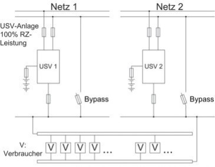
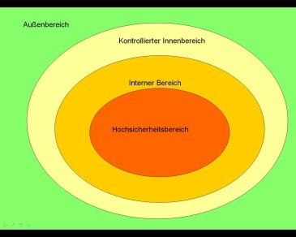

Gebäude bilden den äußeren physischen Rahmen für die Durchführung von Geschäftsprozessen. Ein Gebäude umfasst die stationären Arbeitsplätze, die verarbeiteten Informationen sowie die aufgestellte Informationstechnik und gewährleistet für diese somit einen äußeren Schutz. Zudem ermöglichen die Infrastruktureinrichtungen eines Gebäudes häufig erst die Durchführung von Geschäftsprozessen und den IT-Betrieb. Daher ist nicht nur das Bauwerk an sich, also Wände, Decken, Böden, Dach, Fenster sowie Türen zu betrachten, sondern auch alle gebäudeweiten Infrastruktur- und Versorgungseinrichtungen wie Strom, Wasser, Gas, Heizung und Kühlung. Aufbauend auf den Schutzzielen müssen die verschiedenen Aufgaben und Sicherheitsmaßnahmen abgestimmt werden.
Betrachtet wird ein Gebäude, das von einer oder mehreren Organisationseinheiten einer Institution genutzt wird. Diese können durchaus unterschiedliche Sicherheitsansprüche haben. Zudem muss in alle Überlegungen einfließen, dass ein Gebäude fast immer auch von Institutionsfremden (Bürgern, Kunden, Lieferanten) betreten werden kann und soll. Wenn ein Gebäude von verschiedenen Parteien in derartiger Weise genutzt wird, so müssen Gestaltung und Ausstattung des Gebäudes und das Nutzungskonzept für das Gebäude zueinander passen. Es soll eine optimale Umgebung für die im Gebäude tätigen Menschen sichergestellt werden. Unberechtigte sollen dort keinen Zutritt erhalten, wo sie die Sicherheit beeinträchtigen könnten und die im Gebäude stationierte Technik soll sicher und effizient betrieben werden können.
1.2 Lebenszyklus
Bei der Absicherung eines Gebäudes müssen technische und nicht-technische Sicherheitsaspekte bei der Planung und Nutzung umgesetzt werden. Dabei muss der gesamte Lebenszyklus von Gebäuden betrachtet werden, beginnend von der Erstellung eines Anforderungskataloges, über Konzeption, Einrichtung, Nutzung bis hin zu Umbauten oder Auszug.
Die Verkabelung in einem Gebäude wird in den Bausteinen INF.3 Elektrotechnische Verkabelung und INF.4 IT-Verkabelung gesondert betrachtet, spezielle Räumlichkeiten wie Serverräume oder Archivräume in den jeweiligen Bausteinen der Schicht INF.
Bei der Nutzung von Gebäuden für den Geschäftsbetrieb von Behörden oder Unternehmen sind hinsichtlich der Informationssicherheit bei bestimmten Maßnahmen unterschiedliche Vorgehensweisen zu verfolgen. Bei einem Neubau können erforderliche Maßnahmen zu einem großen Teil schon in der Planungsphase durchgeführt werden.
Wenn es sich dagegen um eine Anmietung oder die Nutzung eines bestehenden Gebäudes handelt, was eventuell mit Erweiterungs- und Umbaumaßnahmen verbunden sein kann, sind die Möglichkeiten zur Realisierung einer adäquaten Informationssicherheit oft viel stärker eingeschränkt.
Planung und Konzeption
Die geplante Nutzung eines Gebäudes und der Schutzbedarf der dort betriebenen Geschäftsprozesse bestimmen, wie das Gebäude zu gestalten und unter Sicherheitsaspekten auszustatten ist. Beginnend bei einer Bewertung der Lage und Art des Grundstücks ist zu prüfen, ob das Gebäude dem vorgesehenen Zweck angemessen ist oder angemessen gestaltet werden kann.
Empfehlenswert bei der weiteren Planung oder Prüfung eines Bestandsgebäudes ist die Bildung eines Zonenmodells (siehe INF.1.M 23 Bildung von Sicherheitszonen), anhand dessen dann eine am Schutzbedarf orientierte Planung der Nutzung des Gebäudes vorgenommen werden kann (siehe INF.1.M1 Planung der Gebäudenutzung). Daraus werden dann die Organisation von Zutrittsberechtigungen, beschrieben in Kapitel 3.1 Zutrittskontrollsystem und Berechtigungsmanagement, die Ausführung von Türen und Fenstern und die weiteren Maßnahmen zur Sicherung und Überwachung abgeleitet.
Bei der Raumbelegungsplanung ist INF.1.M 3 Einhaltung von Brandschutzvorschriften sowie, im Falle einer Nutzung eines bestehenden Gebäudes, INF.1.M 34 Anordnung schützenswerter Gebäudeteile anzuwenden. Stets erforderlich ist auch, entsprechend der geplanten Raumnutzung, die zu erwartenden elektrischen Anschlusswerte zu bestimmen (siehe INF.1.M 2 Angepasste Aufteilung der Stromkreise).
Beschaffung
Sowohl bei der Auswahl eines Standortes für einen Neubau, als auch bei der Bewertung einer Bestandsimmobilie sind die Maßnahmen INF.1.M 25 Geeignete Standortauswahl und INF.1.M 31 Auswahl eines geeigneten Gebäudes in Betracht zu ziehen.
Bauphase und Vorbereitung für Nutzung
Während der Bauphase sind alle in der Planungsphase als erforderlich bewerteten Schutzmaßnahmen umzusetzen. In der Bauphase sind in jedem Fall die Maßnahmen INF.1.M 10 Einhaltung einschlägiger Normen und Vorschriften und INF.1.M 3 Einhaltung von Brandschutzvorschriften anzuwenden. INF.1.M 13 Regelungen für Zutritt zu Verteilern sowie INF.1.M 12 Schlüsselverwaltung sind spätestens beim Einzug in ein Gebäude festzulegen. Ebenso ist eine Zutrittsregelung und ein Zutrittskontrollkonzept gemäß INF.1.M 7 Zutrittsregelung und -kontrolle erforderlich.
Gebäudenutzung
Während der Gebäudenutzungsphase ist insbesondere die regelmäßige Anwendung von INF.1.M 18 Brandschutzbegehungen vorzusehen, womit die Einhaltung der vorgegebenen Vorschriften zum Brandschutz überwacht wird. Durch die Anwendung und regelmäßige Überwachung der Maßnahme INF.1.M 6 Geschlossene Fenster und Türen ist sicherzustellen, dass sich nur befugte Personen im Gebäude aufhalten und dass zumindest eine elementare Vorsorge gegen Einbrüche getroffen wird.
Notfallvorsorge
Um für den Notfall gerüstet zu sein, ist ein Alarmierungsplan zu erstellen, und in regelmäßigen Abständen sind auch Notfallübungen durchzuführen, da andernfalls zu erwarten ist, dass bei einem Notfall falsche Entscheidungen getroffen werden oder Unklarheit über die notwendigen Operationen herrscht (siehe INF.1.M 20 Alarmierungsplan und Brandschutzübungen).
2 Maßnahmen
Im Folgenden sind spezifische Umsetzungshinweise im Bereich "Allgemeines Gebäude" aufgeführt.
2.1 Basis-Maßnahmen
Die folgenden Maßnahmen sollten vorrangig umgesetzt werden:
INF.1.M1 Planung der Gebäudeabsicherung[Informationssicherheitsbeauftragter (ISB), Planer]
Um praxistaugliche und wirtschaftliche Sicherheitsmaßnahmen für die Nutzung eines Gebäudes zu erarbeiten, sind der Schutzbedarf der dort betriebenen Geschäftsprozesse und die grundsätzlichen Schutzziele, die sich häufig aus der Geschäftstätigkeit ergeben, zu ermitteln. Über den selbstverständlichen Schutz von Personen im Gebäude und dem Schutz der Wirtschaftsgüter sind im Rahmen der Informationssicherheit besonders die Schutzbelange der IT, also der Hardware und der Software, zu beachten. Dabei sind neben der klassischen IT-Hardware die Bereiche der gesamten Support-Technik, also Stromversorgung, Kühlung/Klimatisierung etc. zu berücksichtigen.
Bei einem Gebäude müssen viele verschiedene Sicherheitsaspekte beachtet werden, von Brandschutz über Elektrik bis hin zur Zutrittskontrolle. Je nach Größe der Institution und der Gebäude kann es hierfür unterschiedliche Zuständige geben. Daher müssen die verschiedenen Rollen und Aufgaben abgestimmt werden. Die zuständigen Personen sollten sich untereinander abstimmen, um aufbauend auf den Schutzzielen angemessene Sicherheitsmaßnahmen für die verschiedenen Bereiche auszuwählen.
Es ist bewährte Praxis, zur Planung von Gebäuden zunächst Zonen zu betrachten (siehe INF.1.M 23 Bildung von Sicherheitszonen). Viele Schutzziele lassen sich dadurch erreichen, dass es weder nötig noch möglich ist, von einer Zone mit geringem Sicherheitsniveau direkt in eine mit höherem Sicherheitsniveau zu gelangen. Dabei sollte zunächst die räumliche Aufteilung mit der vorgesehenen Nutzung des Gebäudes abgestimmt werden (siehe INF.1.M 1.13 Anordnung schützenswerter Gebäudeteile). Zwischen verschiedenen Sicherheitszonen sollten klar erkennbare und möglichst einfach abzusichernde Übergänge geschaffen werden. Zulässige Übergänge zwischen den Zonen werden dann angepasst an den Schutzbedarf ausgeführt. Unzulässige Übergänge werden entweder unterbunden oder besonders abgesichert. So müssen Fluchttüren aus Sicherheitszonen mit höherem Sicherheitsniveau in den Außenbereich so gesichert werden, dass der unberechtigte Zutritt von außen nach innen verhindert wird. Fenster und Zugänge müssen entsprechend ihres Schutzbedarfs abgesichert sein (siehe INF.1.M 22 Sichere Türen und Fenster).
INF.1.M2 Angepasste Aufteilung der Stromkreise
Häufig wird schon bei der Erstinstallation dahingehend unsauber gearbeitet, dass eine der drei Außenleiter im 3-Phasen-Netz deutlich stärker mit Verbrauchern belegt und damit belastet wird, als die anderen beiden (Gefahr der Sternpunktverschiebung). Des weiteren stimmen erfahrungsgemäß nach einiger Zeit die Raumbelegung und die Anschlusswerte, für die eine Elektroinstallation ausgelegt wurde, nicht mehr mit den tatsächlichen Gegebenheiten überein. Es ist also unerlässlich, bei Änderungen der Raumnutzung und bei Änderungen und Ergänzungen der technischen Ausrüstung (IT, Klimageräte, Beleuchtung, etc.) die Elektroinstallation zu prüfen und gegebenenfalls anzupassen. Das kann in einfachen Fällen durch Umrangierung von Leitungen geschehen. Teilweise kann es aber auch erforderlich werden, zusätzliche oder vollkommen neue Einspeisungen, Leitungen, Verteiler etc. zu installieren.
Weitere Informationen zur IT-Verkabelung und der elektrotechnischen Verkabelung finden sich in den entsprechenden Bausteinen der Schicht INF.
INF.1.M3 Einhaltung von Brandschutzvorschriften
Die bestehenden Brandschutzvorschriften (z. B. nach der Norm DIN 4102 Brandverhalten von Baustoffen und Bauteilen) und die Auflagen der Bauaufsicht für Gebäude sind unbedingt einzuhalten. Die örtliche Feuerwehr sollte bei der Brandschutzplanung hinzugezogen werden.
Für Räume, in denen wichtige IT-Geräte und Datenträger (Server, Datensicherungen, etc.) untergebracht sind, sollten zudem die Regelungen der Norm EN 1047 Teil 2 beachtet werden. Ziel ist hier, durch besondere Maßnahmen wie dem Einbau von Türen mit Brand- und Rauchschutzqualität, der sorgfältigen Ausführung von Schottungen und eventuell sogar der Ertüchtigung von Wänden, die Wirkung eines Brandes auf die Inhalte solcher Räume möglichst gering zu halten.
Bei Besprechungs-, Schulungs- und Veranstaltungsräumen sind unter Umständen die entsprechenden Regelungen für den Brandschutz in Versammlungsstätten zu beachten. Da es hier je nach Nutzungsart unterschiedliche Zusatzforderungen wie beispielsweise hinsichtlich der Öffnungsart und -breite von Türen im Verlauf von Flucht- und Rettungswegen und Beschilderungen gibt, sollte auch hier bei der Planung die örtliche Feuerwehr befragt werden.
Es sollte eine Person benannt werden, die für die Einhaltung von Brandschutzvorschriften verantwortlich ist. Dies kann ein Brandschutzbeauftragter oder eine mit dem Aufgabengebiet betraute Person sein, die auch entsprechend geschult ist.
Es ist empfehlenswert, weitere Hinweise zum Brandschutz zu beachten, wie sie zum Beispiel in den Publikationen der VdS Schadenverhütung GmbH zu finden sind.
Besonders wichtig ist es, die Fluchtwege gut auszuschildern. Dafür sind die vorgeschriebenen Kennzeichen zu verwenden und die Vorschriften zu deren Anbringung einzuhalten. Die Fluchtwege müssen immer offen gehalten werden, das heißt insbesondere, dass sie nicht versperrt werden dürfen, z. B. durch im Flur abgestelltes Inventar oder indem die Fluchttüren abgeschlossen werden.
Brand- und Rauchschutztüren bieten nur im geschlossenen Zustand Schutz und dürfen deshalb keinesfalls durch Keile oder andere Vorrichtungen dauerhaft offen gehalten werden. Es dürfen keine Ausnahmen zugelassen werden.
Damit die Feuerwehr im Brandfall schnell mit der Brandbekämpfung beginnen kann, ist es wichtig, dass die Brandmeldezentrale, das Brandmeldetableau und die Einspeisepunkte für Löschwasser durch Beschilderung schnell gefunden werden können.
Zur Verwirklichung eines effizienten Brandschutzes ist die Zusammenarbeit aller zuständigen Verfahrensbeteiligten notwendig. Hierunter fallen die Funktionen des Brandschutzbeauftragten (Arbeitgeber ist für die Einhaltung der Brandschutzvorschriften verantwortlich), der Fachkraft für Arbeitssicherheit (in Deutschland erforderlich nach §§ 5, 6 Arbeitssicherheitsgesetz, diese ist zuständig für die Ausgestaltung des betrieblichen Brandschutzes) und des Sicherheitsbeauftragten (in Deutschland erforderlich nach § 22 SGB VII, dieser hat ausführende Tätigkeiten, z. B. zur Verhütung von Arbeitsunfällen und Berufskrankheiten, und arbeitet der Fachkraft für Arbeitssicherheit zu).
Vermeidung unnötiger Brandlasten
Eine Brandlast entsteht durch alle brennbaren Stoffe, die ins Gebäude eingebracht werden. Sie ist von der Menge und vom Heizwert der Stoffe abhängig. IT-Geräte und Leitungen stellen ebenso eine Brandlast dar wie Möbel, Fußbodenbeläge und Gardinen. Nähere Erläuterungen zur Brennbarkeit oder Nichtbrennbarkeit von Baustoffen (Baustoffklasse A oder B) sind in der DIN 4102- Teil 1 und Teil 4 zu finden.
Bei der Unterbringung von IT-Geräten, Datenträgern etc. sollte eine vorherige Beachtung der vorhandenen Brandlasten im gleichen Raum und in den benachbarten Räumen erfolgen. Zum Beispiel sollte das Datenträgerarchiv nicht in der Nähe von oder über einem Papierlager untergebracht sein.
Auch im laufenden Betrieb muss auf die Vermeidung unnötiger Brandlasten geachtet werden. Die regelmäßige Entsorgung von Müll, vor allem von Altpapier und von Verpackungsabfällen ist aktiver Brandschutz. Aus Büroräumen sollten nicht mehr benötigte Akten entfernt und in speziell dafür vorgesehenen Archiven gelagert werden. Eine der häufigsten Beispiele für unnötige Brandlasten in Räumen, die für die IT genutzt werden, ist Verpackungsmaterial, beispielsweise Pappe oder Styropor. Aus den IT-Räumen ist Verpackungsmaterial umgehend zu entfernen und in dafür vorgesehene Lagerräume zu transportieren, wenn es noch benötigt wird.
Bei Gebäuden sollte bereits in der Planungsphase die Reduzierung unnötiger Brandlasten berücksichtigt werden. Nicht brennbare Materialien sind für den Ausbau zu bevorzugen (Baustoffklasse A). Um den sicheren Betrieb unter Gesichtspunkten des Brandschutzes zu gewährleisten und Grenzwerte nicht zu überschreiten, sollte schon in der Planungsphase von Gebäuden eine überschlägige Berechnung der späteren Brandlasten erfolgen. Dabei sind die Brandklassen der Einrichtungen sowie die Baustoffklassen der Materialien zu berücksichtigen. Dadurch werden später Schwierigkeiten bei der brandschutztechnischen Abnahme durch Bauaufsichtsbehörden und Feuerwehr vermieden.
INF.1.M4 Branderkennung in Gebäuden[Planer]
Maßnahmen zum baulichen und technischen Brandschutz, Branderkennung und rechtzeitige Alarmierung im Brandfall sind elementare Maßnahmen, um Gesundheit und Leben aller Menschen, die sich in einem Gebäude aufhalten, zu schützen.
Welche Maßnahmen des baulichen und technischen Brandschutzes für ein Gebäude gefordert sind, geben in Deutschland die jeweils gültigen Bauordnungen vor. Um die verschiedenen Landesbauordnungen zu vereinheitlichen, wurde die Musterbauordnung (MBO) als Orientierungsrahmen erstellt. Zudem ist ein nach Größe und Nutzung des Gebäudes angemessenes Brandschutzkonzept aufzustellen.
Es gilt immer, dass es in Gebäuden, je nach Art der Nutzung und der Bauweise, aus verschiedenen Gründen zu Bränden kommen kann. Um Personen zu schützen und um einen Brand rechtzeitig eindämmen zu können, muss seine Entstehung schnellstmöglich detektiert und der Brand bekämpft werden.
Um die Entstehung eines Brandes schnellstmöglich detektieren, alarmieren und bekämpfen zu können, müssen unter Einhaltung der jeweils gültigen Normen und Herstellervorgaben ausreichend Rauchmelder installiert werden.
Lokale Melder können über eine Brandmeldezentrale (BMZ) gesteuert und ausgewertet werden. Melder aller Art und Brandmeldezentrale bilden gemeinsam die Brandmeldeanlage (BMA).
Empfehlenswert ist eine Mindestausstattung bestehend aus
Rauchmeldern an der Decke aller Flure sowie
Rauchmeldern an der Decke aller Technikräume und Räumen der Elektroversorgung (Verteilungen, USV).
Falls eine Raumlufttechnische Anlage (RLT) vorhanden ist, müssen auch deren Lüftungskanäle überwacht werden. Die RLT-Anlage muss zentral durch die BMZ abgeschaltet werden können, um zu verhindern, dass Brandrauch im Gebäude verteilt wird.
Es ist auf den korrekten Einbau der Rauchmelder entsprechend der Herstellervorgaben zu achten. Planung, Errichtung und Betrieb einer BMA sind nach Vorgaben der DIN 14675 "Brandmeldeanlagen - Aufbau und Betrieb" zu konzipieren und zwischen Auftraggeber, Bauaufsicht, Feuerwehr und gegebenenfalls Versicherer abzustimmen.
Falls eine Brandmeldezentrale vorhanden ist, sollten alle deren Meldungen inklusive der Störmeldungen auf einer ständig besetzten Stelle, z. B. der Pförtnerloge, auflaufen.
Die Funktionsfähigkeit aller Rauchmelder sowie aller weiteren Komponenten einer Brandmeldeanlage muss regelmäßig überprüft werden. Es sollten sporadisch einige der Melderlinien manuell auf ihre Funktionsfähigkeit getestet werden.
Bei Rauchdetektion muss eine Alarmierung im Gebäude ausgelöst werden, bei der sichergestellt ist, dass alle im Gebäude anwesenden Personen diese wahrnehmen können.
Um ein gefahrloses Verlassen des Gebäudes sicherzustellen, muss immer gewährleistet sein, dass die vorgesehenen Flucht- und Rettungswege benutzbar sind. Sie dürfen nicht durch Möbel oder gar elektrische Geräte wie Kopierer oder Drucker, die eine erhebliche Brandlast darstellen, in ihrer vorgeschriebenen Breite eingeschränkt werden. Die minimale Breite von Fluchtwegen ist in Deutschland in der Technischen Richtlinie für Arbeitsstätten ASR A2.3 "Fluchtwege und Notausgänge, Flucht- und Rettungsplan" vorgeschrieben. Es muss regelmäßig kontrolliert werden, dass die Fluchtwege benutzbar und frei von Hindernissen sind.
INF.1.M5 Handfeuerlöscher
Die meisten Brände entstehen aus kleinen, anfangs noch gut beherrschbaren Brandherden. Besonders in Büros findet das Feuer reichlich Nahrung und kann sich sehr schnell ausbreiten. Der Sofortbekämpfung von Bränden kommt also ein sehr hoher Stellenwert zu.
Diese Sofortbekämpfung ist nur möglich, wenn Handfeuerlöscher in der jeweils geeigneten Brandklasse (DIN EN 3 Tragbare Feuerlöscher) in ausreichender Zahl und Größe (Beratung durch die örtliche Feuerwehr) im Gebäude zur Verfügung stehen.
Alle Handfeuerlöscher müssen regelmäßig geprüft und gewartet werden, damit sie im Ernstfall funktionieren. Darüber ist ein Instandhaltungsnachweis zu führen. Es ist zudem darauf zu achten, dass Feuerlöscher in Bereichen mit besonderen Zutritts-Beschränkungen bei solchen regelmäßigen Inspektionen nicht vergessen werden.
Pulverlöscher, die die Brandklassen A (feste Stoffe), B (brennbare Flüssigkeiten) und C (Gase) abdecken, sollten in Bereichen mit elektrischen und elektronischen Geräten nicht eingesetzt werden, weil die Löschschäden in der Regel unverhältnismäßig hoch sind. Es wird daher dringend empfohlen, im direkten Umfeld von Serverräumen, Datenträgerarchiven, Räumen für technische Infrastruktur und Rechenzentren keine Pulverlöscher, sondern ausschließlich geeignete Gaslöscher bereit zu halten. Nur so kann verhindert werden, dass in der Ausregung eines Brandes fälschlicher Weise ein Pulverlöscher verwendet wird. Im Übrigen sind die geeigneten Handfeuerlöscher unter Berücksichtigung des Vorausgesagten im Brandschutzkonzept festzulegen.
Die Feuerlöscher müssen so angebracht werden, dass sie im Brandfall leicht erreichbar sind. Die Beschäftigten sollten sich den Standort des nächsten Feuerlöschers einprägen. Die Standorte von Löschern und Hydranten sind durch vorgeschriebene Schilder kenntlich zu machen. Tragbare Feuerlöscher sind zugelassen bis zu einem Gesamtgewicht von 20 kg. Mit den überwiegend eingesetzten Geräten von 6 und 12 kg lassen sich größere Brandherde löschen als von Laien üblicherweise angenommen wird, dies ist allerdings nur bei richtiger Anwendung des Löschers gegeben. Bis zur vollständigen Entladung des Löschmittels vergehen nur wenige Sekunden. Daher sind bei entsprechenden Brandschutzübungen die Mitarbeiter in die Benutzung der Handfeuerlöscher einzuweisen und die Bedienung der Löscher auch zu üben.
INF.1.M6 Geschlossene Fenster und Türen[Mitarbeiter]
Fenster und nach außen gehende Türen (Balkone, Terrassen) müssen in Zeiten, in denen ein Raum nicht besetzt ist, geschlossen werden. Außentüren sind abzuschließen. Im Keller- und Erdgeschoss und, je nach Fassadengestaltung, auch in den höheren Etagen, bieten offene Fenster und Türen Einbrechern ideale Einstiegsmöglichkeiten, die auch während der Betriebszeiten einer Institution genutzt werden.
Mitarbeiter sollten darauf hingewiesen werden, dass Fenster und Türen beim Verlassen von Räumen zu schließen sind. Wenn während normaler Arbeitszeiten sichergestellt ist, dass die Räume nur kurzzeitig leer stehen, kann von einer zwingenden Regelung für Büroräume sowie für Besprechungs-, Veranstaltungs- und Schulungsräumen abgesehen werden.
Keine Ausnahme darf bei Brand- und Rauchschutztüren zugelassen werden. Diese bieten nur im geschlossenen Zustand Schutz und dürfen deshalb keinesfalls durch Keile oder andere Vorrichtungen dauerhaft offen gehalten werden (siehe INF.1.M3 Einhaltung von Brandschutzvorschriften).
Es ist sinnvoll, wenn Pförtner oder Mitarbeiter der Haustechnik regelmäßig überprüfen, ob die Fenster und Türen nach Verlassen der Räume verschlossen wurden.
INF.1.M7 Zutrittsregelung und -kontrolle[Leiter Organisation]
Der Zutritt zu schutzbedürftigen Gebäudeteilen und Räumen ist zu regeln und zu kontrollieren (siehe ORP.4 Identitäts- und Berechtigungsmanagement). Die Maßnahmen reichen dabei von einer einfachen Schlüsselvergabe bis zu aufwendigen Identifizierungssystemen mit Personenvereinzelung.
Für eine Zutrittsregelung und -kontrolle ist es erforderlich, dass
der von der Regelung betroffene Bereich eindeutig bestimmt wird,
die Zahl der zutrittsberechtigten Personen auf ein Mindestmaß reduziert wird; diese Personen sollen gegenseitig ihre Berechtigung kennen, um Unberechtigte als solche erkennen zu können,
der Zutritt anderer Personen (Besucher) erst nach vorheriger Prüfung der Notwendigkeit erfolgt,
erteilte Zutrittsberechtigungen dokumentiert werden.
Die Vergabe von Rechten allein reicht nicht aus, wenn deren Einhaltung oder Überschreitung nicht kontrolliert wird. Die Ausgestaltung von Kontrollmechanismen sollte nach dem Grundsatz erfolgen, dass einfache und praktikable Lösungen oft ebenso effizient sind wie aufwendige Technik. Beispiele hierfür sind:
Information und Sensibilisierung der Berechtigten,
Bekanntgabe von Berechtigungsänderungen,
sichtbares Tragen von Hausausweisen, ergänzt durch Vergabe von Besucherausweisen,
Begleitung von Besuchern,
Verhaltensregelungen bei erkannter Berechtigungsüberschreitung und
Einschränkung des ungehinderten Zutritts für nicht Zutrittsberechtigte (z. B. Tür mit Blindknauf, Schloss für Berechtigte mit Schlüssel, Klingel für Besucher).
Bei der Zutrittskontrolle werden verschiedene bauliche, organisatorische und personelle Maßnahmen benötigt. Deren Zusammenwirken sollte in einem Zutrittskontrollkonzept geregelt sein, das die generellen Richtlinien für den Perimeter-, Gebäude- und Geräteschutz festlegt. Dazu gehören:
Festlegung der SicherheitszonenZu schützende Bereiche können etwa Grundstücke, Gebäude, Serverräume, Räume mit Peripheriegeräten, Archive, Kommunikationseinrichtungen und die Haustechnik sein. Da diese Bereiche häufig sehr unterschiedliche Sicherheitsanforderungen aufweisen, kann es sinnvoll sein, diese in verschiedene Sicherheitszonen aufzuteilen (siehe INF.1.M 23 Bildung von Sicherheitszonen).
Vergabe von Zutrittsberechtigungen (siehe ORP.4 Identitäts- und Berechtigungsmanagement)
Bestimmung eines Verantwortlichen für ZutrittskontrolleDieser vergibt die Zutrittsberechtigungen an die einzelnen Personen entsprechend den in der Sicherheitspolitik festgelegten Grundsätzen.
Definition von ZeitabhängigkeitenEs ist zu klären, ob zeitliche Beschränkungen der Zutrittsrechte erforderlich sind. Solche Zeitabhängigkeiten können etwa sein: Zutritt nur während der Arbeitszeit, Zutritt einmal täglich oder befristeter Zutritt bis zu einem fixierten Datum.
Festlegung der BeweissicherungHier ist zu bestimmen, welche Daten bei Zutritt zu und Verlassen von einem geschützten Bereich protokolliert werden. Dabei bedarf es einer sorgfältigen Abwägung zwischen den Sicherheitsinteressen des Systembetreibers und den Schutzinteressen der Privatsphäre des Einzelnen.
Behandlung von AusnahmesituationenAuch in Ausnahmesituationen sollten keine Unbefugten das Gebäude oder die Liegenschaften betreten können. Oberste Priorität ist allerdings sicherzustellen, dass im Brandfall alle Personen schnellstmöglich die gefährdeten Zonen verlassen können.
Ergänzend kann der Einbau von Ausweislesern verschiedenster Qualitäten, von Schleusen und Vereinzelungseinrichtungen sinnvoll sein. Zur Schlüsselverwaltung siehe INF.1.M 12 Schlüsselverwaltung.
Um ein umfassenderes Konzept umzusetzen, Flexibilität im Einsatz zu erhalten und um Transparenz und Nachprüfbarkeit sicherzustellen, ist der Einsatz eines IT-gestützten Systems zum Berechtigungsmanagement zu empfehlen (siehe Kapitel 3.1 Zutrittskontrollsystem und Berechtigungsmanagement).
Die Terminals zur Zutrittskontrolle müssen gegen Manipulationen geschützt werden. Dafür müssen diese so angebracht werden, dass Vertraulichkeit bei der Eingabe von Daten gewährleistet ist. Außerdem sollten alle zur Dateneingabe erforderlichen Einheiten in einem Gerät kombiniert sein, also beispielsweise eine Tastatur zur PIN-Eingabe.
Befinden sich nicht alle Einheiten in einem Gerät, muss die Datenübertragung zwischen diesen verschlüsselt erfolgen. Werden also z. B. berührungslose Ausweisleser eingesetzt, so muss die Datenübertragung zwischen Karte und Leser verschlüsselt erfolgen.
Im Betrieb muss die Wirksamkeit aller technischen und organisatorischen Maßnahmen stetig kontrolliert werden. Es empfiehlt sich, vor allem an bekannten problematischen Stelle regelmäßig zu überprüfen, ob keine Möglichkeiten entstanden sind, um die Zutrittskontrolle zu umgehen, z. B. in Liefer- oder Raucherzonen.
INF.1.M8 Rauchverbot[Mitarbeiter]
In erster Linie dient ein allgemeines Rauchverbot in Gebäuden natürlich dem Nichtraucherschutz. Daneben hat es aber auch Relevanz in der Informationssicherheit. So kann Tabak-Rauch empfindliche IT-Geräte ebenso schädigen wie der Rauch eines Schadfeuers. Daher und wegen der zusätzlichen Brandgefahr sollte in allen IT-Betriebsräumen (Serverraum, Datenträgerarchiv, aber auch Belegarchiv etc.), ein striktes Rauchverbot eingehalten werden. Dieses dient gleicherweise dem vorbeugenden Brandschutz wie der Betriebssicherheit von IT mit mechanischen Funktionseinheiten.
Leider erwächst aus dem Rauchverbot in Gebäuden durch die bereitzustellenden Raucherzonen in Außenbereichen ein anderes Risiko. Es ist häufig zu beobachten, dass Außentüren in mitunter schwer einsehbaren Bereichen ständig offen stehen, weil der Nahbereich der Tür die Raucherzone bildet und die Tür aus Bequemlichkeit während der Arbeitszeiten nie geschlossen wird.
2.2 Standard-Maßnahmen
Gemeinsam mit den Basis-Maßnahmen entsprechen die folgenden Maßnahmen dem Stand der Technik im Bereich "Allgemeines Gebäude".
INF.1.M9 Sicherheitskonzept für die Gebäudenutzung[Informationssicherheitsbeauftragter (ISB), Planer]
Voraussetzung für Erstellung eines effektiven Sicherheitskonzepts ist die Ermittlung des Schutzbedarfs der in einem Gebäude betriebenen Geschäftsprozesse und die Definition der grundsätzlichen Schutzziele, die sich häufig aus der Geschäftstätigkeit ergeben. Anschließend wird ein praxistaugliches und wirtschaftliches Sicherheitskonzept für die Nutzung eines Gebäudes erarbeitet. Unter der Berücksichtigung verschiedener Sicherheitsaspekte eines Gebäudes, sollten aufbauend auf den Schutzzielen angemessene Sicherheitsmaßnahmen für die verschiedenen Bereiche bei Aufrechterhaltung eines definierten Sicherheitsniveaus festgelegt werden. Es soll sichergestellt werden, dass alle Zugänge so kontrolliert und abgesichert sind, dass keine unbefugten Personen die zu schützenden Bereiche betreten können.
Ergänzt werden muss diese Betrachtung fast immer um weitere Maßnahmen gegen unerlaubtes Eindringen oder Einschleichen. Einen Überblick dazu bildet die Maßnahme INF.1.M 27 Einbruchsschutz.
Wenn das Gebäude öffentliche oder halböffentliche Bereiche aufweist oder wenn z. B.durch Fensterfronten im Straßenbereich Einblick in das Gebäude möglich ist, ist die INF.1.M 16 Vermeidung von Lagehinweisen auf schützenswerte Gebäudeteile zu prüfen.
Überall wo der Schutz der Inhalte des Gebäudes, seien es Waren, sei es die technische Infrastruktur, in besonderer Weise gefordert ist, muss das Sicherheitskonzept den Schutz vor Wasser betrachten. Hinweise dazu gibt die Maßnahme INF.1.M 24 Selbsttätige Entwässerung.
Alle auf die Schutzziele abgestimmten vorbeugenden oder schadensmindernden Maßnahmen müssen schließlich noch um detektierende Maßnahmen (siehe M 1.18 Gefahrenmeldeanlage) ergänzt werden. Das Gebäude-Schutzkonzept ist erst dann vollständig, wenn durch Planung und Ausführung den relevanten Gefährdungen entgegengewirkt wird und durch überwachende Maßnahmen sichergestellt wird, dass schadenbringende Ereignisse oder zufällige oder vorsätzliche Versuche, Schutz- und Sicherungsmaßnahmen zu überwinden möglichst frühzeitig bemerkt werden. Nur dann ist es möglich, Gegenmaßnahmen einzuleiten.
Das Sicherheitskonzept für das Gebäude sollte mit dem Gesamt-Sicherheitskonzept der Institution abgestimmt sein. Es sollte regelmäßig aktualisiert werden, vor allem wenn sich Änderungen in der Gebäudenutzung ergeben, also beispielsweise nach organisatorischen Änderungen in der Institution.
INF.1.M10 Einhaltung einschlägiger Normen und Vorschriften[Bauleiter, Errichterfirma]
Für nahezu alle Bereiche der Technik gibt es Richtlinien, Normen und Vorschriften. Diese können von Standardisierungsorganisationen, Branchenvereinigungen, Anwendergruppen oder staatlichen Institutionen herausgegeben worden sein, z. B. DIN (Deutsches Institut für Normung), ISO (International Standards Organization), VDE (Verband der Elektrotechnik, Elektronik und Informationstechnik), VDMA (Verband Deutscher Maschinen- und Anlagenbau), VdS (Verband der Sachversicherer). Diese Regelwerke tragen dazu bei, dass technische Einrichtungen ein ausreichendes Maß an Schutz für die Benutzer und Sicherheit für den Betrieb gewährleisten.
Die Buchstaben-getreue Einhaltung von Normen allein führt nicht zu einer signifikanten Verbesserung der Informationssicherheit. Die intelligente Umsetzung normativer Vorgaben stellt aber eine unverzichtbare Grundlage für alle weiteren Sicherheitsmaßnahmen dar. Bei der Planung und Errichtung von Gebäuden, bei deren Betrieb und Umbau sowie beim Einbau technischer Gebäudeausrüstungen (z. B. interne Versorgungsnetze wie Telefon- oder Datennetze) und bei Beschaffung und Betrieb von Geräten sind entsprechende Normen und Vorschriften also unbedingt zu beachten.
INF.1.M11 Abgeschlossene Türen[Mitarbeiter]
Die Türen nicht besetzter Räume sollten abgeschlossen werden. Dadurch wird verhindert, dass Unbefugte Zugriff auf darin befindliche Unterlagen und IT-Einrichtungen erlangen. Das Abschließen einzelner Büros ist insbesondere dann wichtig, wenn sich diese in Bereichen mit Publikumsverkehr befinden oder der Zutritt nicht durch andere Maßnahmen kontrolliert wird.
Auf das Abschließen der Türen kann verzichtet werden, wenn diese flurseitig über einen Blindknauf verfügen. Voraussetzung hierfür ist allerdings, dass die befugten Mitarbeiter ihren Schlüssel stets mit sich führen.
Innentüren können auch Fluchttüren sein. Fluchttüren müssen ermöglichen, dass die Türen jederzeit durch beliebige Personen von innen geöffnet werden können, solange sich Personen auf der Innenseite befinden. Sie müssen so gesichert sein, dass ein unberechtigter Zutritt von außen nach innen verhindert wird.
In manchen Fällen, z. B. in Großraumbüros, können Büros nicht abgeschlossen werden. Dann sollte alternativ jeder Mitarbeiter vor seiner Abwesenheit seine Unterlagen ("Clear-Desk-Politik") und den persönlichen Arbeitsbereich verschließen: Schreibtisch, Schrank und PC (Zugriffsschutz aktivieren), Telefon.
In Besprechungs-, Veranstaltungs- und Schulungsräumen gibt es meistens keine Möglichkeit, Unterlagen, IT-Systeme und ähnliches gesondert einzuschließen. Daher sollte es möglich sein, solche Räume zumindest dann, wenn alle Teilnehmer einer Veranstaltung den Raum verlassen, abzuschließen oder ihn durch einen internen Mitarbeiter beaufsichtigen zu lassen.
Bei laufendem Rechner kann auf das Abschließen der Türen verzichtet werden, wenn Zugriffe nur nach erfolgreicher Authentisierung möglich sind, also z. B. ein passwortunterstützter Bildschirmschoner aktiviert ist. Bei ausgeschaltetem Rechner kann auf das Verschließen des Büros verzichtet werden, wenn das Booten des Rechners die Eingabe eines Passwortes verlangt. Die gleiche Funktion erfüllen Zugangsmechanismen, die auf Token oder Chipkarten basieren.
Es ist sinnvoll, wenn dafür beauftragte Mitarbeiter wie Pförtner oder Mitarbeiter der Haustechnik sporadisch überprüfen, ob die Vorgaben zum Verschließen von Räumen sowie zur sicheren Aufbewahrung von vertraulichen UNterlagen eingehalten werden.
INF.1.M12 Schlüsselverwaltung
Für alle Schlüssel des Gebäudes (von Etagen, Fluren und Räumen) ist ein Schließplan zu fertigen. Die Herstellung, Aufbewahrung, Verwaltung und Ausgabe von Schlüsseln ist zentral zu regeln. Reserveschlüssel sind vorzuhalten und gesichert aufzubewahren. Das gleiche gilt auch für alle Identifikationsmittel wie Magnetstreifen- oder Chipkarten. Zu beachten bleibt:
Ist eine Schließanlage vorhanden, sind für schutzbedürftige Bereiche eigene Schließgruppen zu bilden. Je nach Anforderungen sind einzelne Räume aus der Schließgruppe herauszunehmen und mit Einzelschließung zu versehen.
Nicht ausgegebene Schlüssel und die Reserveschlüssel sind gegen unbefugten Zugriff geschützt aufzubewahren.
Die Ausgabe der Schlüssel erfolgt nur in begründeten und nachvollziehbaren Fällen an hierfür autorisierte Personen gegen Quittung und ist zu dokumentieren. Auch im Vertretungsfall darf ein Schlüssel nicht einfach weitergegeben werden, sondern hat über die Schlüsselausgabe zu erfolgen. Nur über diesen Umweg kann eine lückenlose Dokumentation als Nachweis über den Verbleib des Schlüssels erfolgen.
Es sind Vorkehrungen zu treffen, wie bei Verlust einzelner Schlüssel zu reagieren ist (Meldung, Ersatz, Kostenerstattung, unter Umständen Regress wegen mangelnder Sorgfaltspflicht prüfen), Austausch des Schlosses, Austausch von Schließgruppen etc.).
Wenn sich Rollen oder Zuständigkeiten von Mitarbeitern ändern, sind deren Schließberechtigungen zu prüfen und nicht mehr benötigte Schlüssel einzuziehen.
Beim Ausscheiden von Mitarbeitern sind alle Schlüssel einzuziehen (Aufnahme der Schlüsselverwaltung in den Laufzettel der noch vor dem Ausscheiden zu erledigenden Stationen).
Schlösser und Schlüssel zu besonders schutzbedürftigen Bereichen (zu denen nur sehr wenige Schlüssel ausgegeben werden sollten) können bei Bedarf auch ohne vorherige Ankündigung im Verdachtsfall getauscht werden, um so die Nutzung nicht autorisierter Schlüssel / Schließmittel zu verhindern.
INF.1.M13 Regelungen für Zutritt zu Verteilern
Die Verteiler (z. B. für Energieversorgung, Datennetze, Telefonie) sind nach Möglichkeit in Räumen für technische Infrastruktur (siehe Baustein INF.5 Raum für technische Infrastruktur) unterzubringen. Die dort genannten Sicherheitsanforderungen sind zu berücksichtigen.
Der Zutritt zu den Verteilern aller Versorgungseinrichtungen (Strom, Wasser, Gas, Telefon, Gefahrenmeldung, Fernwärme/-kälte, etc.) in einem Gebäude muss möglich und geordnet sein. Mit möglich ist gemeint,
dass Verteiler nicht bei Malerarbeiten mit Farbe oder Tapeten so verklebt werden, dass sie nur noch mit Werkzeug zu öffnen oder unauffindbar sind,
dass Verteiler nicht mit Möbeln, Geräten, Paletten etc. zugestellt werden,
dass für verschlossene Verteiler die Schlüssel verfügbar sind und die Schlösser funktionieren.
Mit geordnet ist gemeint, dass festgelegt ist, wer welchen Verteiler öffnen darf. Verteiler sollten verschlossen sein und dürfen nur von den für die jeweilige Versorgungseinrichtung zuständigen Personen geöffnet werden. Die Zugriffsmöglichkeiten können durch unterschiedliche Schließungen und eine entsprechende Schlüsselverwaltung geregelt werden (siehe dazu INF.1.M 12 Schlüsselverwaltung und Kapitel 3.1 Zutrittskontrollsystem und Berechtigungsmanagement).
Sind in Verteilern des Stromversorgungsnetzes Schmelzsicherungen eingebaut, sollten entsprechende Ersatzsicherungen (im Verteiler) bereit liegen. Eine Dokumentation der Verteiler ist entsprechend INF.3 Elektrotechnische Verkabelung auszuführen.
Alle im Verteiler eingebauten Einrichtungen sind exakt und dauerhaft zu beschriften. Diese Beschriftung ist so anzubringen, dass auch bei entfernten Abdeckungen jedes Einbauelement unmittelbar sicher identifiziert werden kann.
INF.1.M14 Blitzschutzeinrichtungen
Die direkten Auswirkungen eines Blitzeinschlages auf ein Gebäude (Beschädigung der Bausubstanz, Brand u. ä.) lassen sich durch die Installation einer geeigneten Blitzschutzanlage weitestgehend verhindern. Da es aber nicht Aufgabe und Funktion des "Äußeren Blitzschutzes" ist, die im Gebäude vorhandenen elektrischen Betriebsmittel zu schützen, ist zudem auch ein "Innerer Blitzschutz", also der Überspannungsschutz, erforderlich (siehe dazu INF.3 Elektrotechnische Verkabelung).
Beispiel:
Durch Blitzschlag entstand in der süddeutschen Niederlassung eines Dienstleistungsunternehmens ein Schaden an IT-Geräten (PCs, Server, Laserdrucker) in Höhe von ca. 10.000 Euro. Aufgrund dieses Ereignisses wurde das Gebäude mit einem äußeren Blitzschutz ohne inneren Blitzschutz (Überspannungsschutz) ausgestattet. Ein erneuter Blitzschlag führte nun trotz äußeren Blitzschutzes zu Schäden in annähernd gleicher Höhe.
Die seit gültige Norm DIN EN 62305 "Blitzschutz" (entspricht den Normen VDE 0185-305 und IEC 62305) ordnet seit 2006 den gesamten Blitz- und Überspannungsschutz neu.
Jede Institution sollte auf Basis der neuen Norm DIN EN 62305 ein Blitz- und Überspannungsschutzkonzept erstellen. In Teil 2 "Risiko-Management" beschreibt diese Norm erstmals allgemeinverbindlich den Weg zu einem risikoorientierten Blitz- und Überspannungsschutz. Im Teil 3 wird darin der "Schutz von baulichen Anlagen und Personen", also der äußere Blitzschutz behandelt.
Der äußere Blitzschutz, die Fangeinrichtung (vulgo Blitzableiter), wird hinsichtlich ihrer Wirksamkeit in vier Schutzklassen (auch Lightning-Protection-Level, kurz LPL genannt) unterteilt. Die Schutzklasse IV (LPL IV) hat den geringsten Schutzwert, während eine Fangeinrichtung der Schutzklasse I den besten Schutz bietet. Leicht erkennbarer Unterschied zwischen den 4 Schutzklassen ist die Maschenweite der Fangeinrichtungen. Diese reicht von 20 x 20 m für die Schutzklasse IV in 5 m-Schritten hinunter bis 5 x 5 m für die Schutzklasse I. Für Gebäude mit umfangreicher IT-Ausstattung sollte die Fangeinrichtung mindestens der Schutzklasse II, besser Schutzklasse I entsprechen.
Der durch die Fangeinrichtung zur Erdung abfließende eingeprägte Blitzstrom bewirkt eine entlang der Fangeinrichtung vom Einschlagspunkt des Blitzes zum Erdungspunkt hin abnehmende Spannung. Am höchsten Punkt der Fangeinrichtung kann diese Spannung einige 100.000 Volt betragen. Es ist daher zu beachten, dass gerade in oberen Geschossen eines Gebäudes galvanisch leitende Installationen (Daten, Strom, Wasser etc.) einen ausreichenden Abstand von den Fangeinrichtungen haben müssen. Auch dieser Aspekt ist unter der Bezeichnung Trennungsabstand in der neuen Norm berücksichtigt. Mit Überlegungen zum Schutz gegen kompromittierende Einkopplung hat das nichts zu tun, auch wenn der Aspekt des Trennungsabstandes bisher häufig fälschlich mit dem Schutz gegen Einkopplung von den zu nahe am Blitzableiter liegenden Datenleitungen auf den Blitzableiter gleichgesetzt wurde.
Da der Spannungsabfall entlang der Fangeinrichtung am Erdungspunkt wegen des verbleibenden Erdübergangswiderstandes nie bis auf 0 V sinkt und der Fußpunkt der Fangeinrichtung mit dem Hauptpotentialausgleich des Gebäudes verbunden sein muss, wird das gesamte PE-System des Gebäudes und damit auch der N-Leiter auf diese Restspannung angehoben. Hier sind Spannungen im Bereich von immerhin noch weit über 10.000 Volt zu erwarten. Es werden also Spannungen zwischen N-/PE-Leitern und den Leitern L1/L2/L3 erreicht, die das betriebsübliche Maß von 230/400 V deutlich überschreiten. Damit diese Spannungen den innerhalb des Gebäudes betriebenen elektrotechnischen Einrichtungen nicht schaden, muss als unverzichtbare Folge aus dem Aufbau des äußeren Blitzschutzes der innere Blitzschutz, also der Überspannungsschutz aufgebaut werden (siehe INF.3 Elektrotechnische Verkabelung).
Das gesamte Blitzschutzsystem muss regelmäßig geprüft werden. Fangeinrichtungen der Schutzklassen I und II sind jährlich einer Sichtprüfung und alle 2 Jahre einer umfassenden Prüfung zu unterziehen. Für die Schutzklassen III und IV sind hier 2 bzw. 4 Jahre vorgesehen. Bei kritischen Systemen also solchen zum Schutz hoch- oder höchst verfügbarer Einrichtungen ist eine umfassende Prüfung sogar jährlich durchzuführen. Erkannte Mängel sind umgehend zu beheben. Selbstverständlich sind die Durchführung der Prüfung, die dabei getroffenen Feststellungen sowie durchgeführte Mängelbehebungen schriftlich zu dokumentieren.
INF.1.M15 Lagepläne der Versorgungsleitungen
Lagepläne kennzeichnen die Versorgungsleitungen (Strom, Wasser, Gas, Telefon, Gefahrenmeldung, Klimatisierung etc.) eines Gebäudes und von Gebäuden einer Liegenschaft in visueller Form, idealerweise mit einem erläuternden schriftlichen Teil. Aktuelle und gepflegte Pläne ermöglichen es, Arbeiten im Bereich von Leitungen so vorzubereiten, dass diese nicht beschädigt werden sowie sich im Schadensfall einfach und schnell ein genaues Bild der Situation zu machen, Schadstellen schnell zu lokalisieren, um Störungen dadurch schneller beheben zu können. Deshalb sollten genaue und jederzeit aktuelle Lagepläne aller Versorgungsleitungen, inklusive aller die Leitungen betreffenden Sachverhalte, im Gebäude und auf dem dazugehörenden Grundstück, geführt werden. Dazu gehören:
genaue Führung der Leitungen (Einzeichnung in bemaßte Grundriss- und Lagepläne),
genaue technische Daten (Typ und Abmessung),
eventuell vorhandene Kennzeichnung,
Nutzung der Leitungen, Nennung der daran angeschlossenen Netzteilnehmer,
Gefahrenpunkte und
vorhandene und zu prüfende Sicherheitsmaßnahmen.
Alle Arbeiten an Leitungen sollten vollständig und zeitnah dokumentiert werden. Die Pläne sollten gesichert aufbewahrt und so gelagert werden, dass ausschließlich berechtigte Personen darauf zugreifen können, sie aber zugleich im Bedarfsfall schnell verfügbar sind.
INF.1.M16 Vermeidung von Lagehinweisen auf schützenswerte Gebäudeteile
In jedem Gebäude gibt es Bereiche mit unterschiedlichen Nutzungsszenarien und unterschiedlichem Schutzbedarf. Schützenswerte Gebäudeteile sind z. B. Serverraum, Rechenzentrum, Datenträgerarchiv, Klimazentrale, Verteilungen der Stromversorgung, Schalt- und Rangierräume, Ersatzteillager.
Solche Bereiche sollten keinen Hinweis auf ihre Nutzung tragen. Türschilder wie z. B. RECHENZENTRUM oder ARCHIV geben einem potentiellen Angreifer, der zum Gebäude Zutritt hat, Hinweise, um seine Aktivitäten gezielter und damit Erfolg versprechender vorbereiten zu können.
Ist es unvermeidbar, geschäftsrelevante Informationen oder IT in Räumen oder Gebäudebereichen unterzubringen, die für Fremde leicht von außen einsehbar sind (siehe auch INF.1.M 34 Anordnung schützenswerter Gebäudeteile), so sind geeignete Maßnahmen zu treffen, um den Einblick zu verhindern oder so zu gestalten, dass die Nutzung nicht offenbar wird. Dabei ist darauf zu achten, dass z. B. nicht nur ein Fenster einer ganzen Etage mit einem Sichtschutz versehen wird.
INF.1.M17 Baulicher Rauchschutz[Planer]
Rauch stellt bei Bränden die größte Personengefährdung dar. Mehr als 90 % der Brandtoten sind durch Raucheinwirkungen (Vergiftungen) zu beklagen. Aber auch die IT-Hardware kann durch Rauch erheblich in Mitleidenschaft gezogen werden. Daher ist auf einen umfassenden Rauchschutz Wert zu legen.
Die folgenden Empfehlungen sollten zum Rauchschutz berücksichtigt werden:
Brandschutztüren sollten Rauchschutzqualität aufweisen, erkennbar am Kürzel „RS“ in der Typenbezeichnung der Tür.
Rauchschutztüren in Fluren sollten durch Rauchschalter gesteuert werden. Solche Türen können immer offen stehen, da sie bei Rauchdetektion selbsttätig schließen.
Eine rasche Entrauchung von IT-Räumen muss möglich sein.
In Klimakanälen (Zu- und Abluft) sollten Kanalmelder installiert sein. In der Frischluftansaugung sollten Melder installiert sein, die diese automatisch sperren, wenn Störgrößen (Rauch) erkannt werden.
Nach Installations- und Umbauarbeiten ist sicherzustellen, dass Rauchschutzmaßnahmen wirksam geblieben sind oder wieder hergestellt wurden.
Die Mitarbeiter müssen unterrichtet werden, welche Warnsignale die Rauchschutz-Komponenten haben und wie sie darauf zu reagieren haben.
Die Funktionsfähigkeit aller Rauchschutz-Komponenten muss regelmäßig überprüft werden. Dazu gehört es auch, zu überprüfen, ob Durchbrüche zur Durchführung von Verkabelungen im Doppelboden und in abgehängten Decken wirksam geschottet wurden.
INF.1.M18 Brandschutzbegehungen
Brandschutzbegehungen sollen Schwachstellen des vorbeugenden Brandschutzes aufdecken und sie unterstützen bei der Bewusstseinsbildung zur Etablierung präventiver Maßnahmen.
Bei Begehungen sollten typische Schwachstellen gezielt betrachtet werden, wie die Ansammlung brennbarer oder explosionsgefährlicher Stoffe außerhalb der dafür bestimmten Lager und Behältnisse oder Lagerung von Papiervorräten oder Möbeln innerhalb von Technik- und Serverräumen (nicht selten überschreiten diese Ansammlungen die zulässigen Brandlasten oder verstellen Fluchtwege). Hierbei wird überprüft, ob Rauchmelder funktionieren, Brandabschnitts- oder Rauchschutztüren durch Keile offen gehalten, Brandabschottungen bei Arbeiten geöffnet und/oder sogar beschädigt und nicht ordnungsgemäß wiederhergerichtet wurden. Neben angekündigten sollten auch unangekündigte Begehungen erfolgen, Feststellungen protokolliert und Mängel unverzüglich beseitigt werden.
Da die Handlungsweise der Mitarbeiter in der Regel nicht vom böswilligen Vorsatz, sondern von der betrieblichen Notwendigkeit oder Bequemlichkeit bestimmt wird, kann es nicht Sinn einer Brandschutzbegehung sein, Täter zu finden und zu bestrafen. Vielmehr sollten die vorgefundenen Mängel dazu Anlass geben, die Zustände und auch deren Ursachen unverzüglich zu beheben.
INF.1.M19 Frühzeitige Information des Brandschutzbeauftragten
Bei allen Arbeiten an Rohr- und Kabeltrassen, die in irgendeiner Form Wanddurchbrüche sowie notwendige Flure, Flucht- und Rettungswege berühren, ist der Brandschutzbeauftragte zu informieren. Diese Information muss schon so deutlich im Vorfeld der eigentlichen Arbeiten erfolgen, dass der Brandschutzbeauftragte ausreichend Gelegenheit hat, alle Aspekte des baulichen vorbeugenden Brandschutzes in die Planung und Durchführung der beabsichtigten Arbeiten einzubringen.
Dem Brandschutzbeauftragten muss, auch während laufender Arbeiten, durch rechtzeitige Information die Gelegenheit gegeben werden, die ordnungsgemäße Ausführung von Brandschutzmaßnahmen zu kontrollieren oder eine solche Kontrolle zu veranlassen, bevor diese durch den Baufortschritt nicht mehr zugänglich sind, z. B. weil eine abgehängte Decke bereits geschlossen worden ist.
Die Einbindung des Brandschutzbeauftragten ist durch entsprechende Organisationsanweisungen sicherzustellen und in den Planungs- und Abnahmeunterlagen der Baumaßnahme zu dokumentieren (siehe auch INF.1.M 3 Einhaltung von Brandschutzvorschriften).
INF.1.M20 Alarmierungsplan und Brandschutzübungen
Es ist erforderlich, Pläne für die im Brandfall zu ergreifenden Maßnahmen zu erstellen. In einem solchen Plan ist z. B. niederzulegen,
welche Maßnahmen bei welchen Ereignissen zu treffen sind,
ob und wie Gebäudeteile evtl. zu räumen sind (Personen und Geräte),
wer zu informieren ist und
welche hilfeleistenden Kräfte zu informieren sind.
Ergänzt werden kann der Alarmierungsplan um Verhaltensregeln für den Brandfall, die allen Mitarbeitern bekannt zu geben sind. Dazu siehe auch Baustein DER.4 Notfallmanagement.
Der beste Alarmierungsplan nützt allerdings wenig, wenn nicht sichergestellt ist, dass die darin aufgelisteten Maßnahmen richtig und praktikabel sind. Es ist also erforderlich, den Alarmierungsplan regelmäßig zu prüfen und zu aktualisieren. Eine dieser Prüfungsmaßnahmen ist die Durchführung von Brandschutzübungen.
Beispiel:
Eine in einem 21?geschossigen Bonner Bürogebäude durchgeführte Brandschutzübung hat gezeigt, dass viele Mitarbeiter nicht wussten, wo ein Feuerlöscher oder wo das nächste Treppenhaus ist. Im Ernstfall kann diese Unkenntnis zu einer Katastrophe führen. Teilweise wurde die Übung ignoriert, man verließ aus Bequemlichkeit den Raum nicht.
Gerade in Brandschutzübungen soll das richtige Verhalten im Brandfall geschult und geübt werden, um Menschenleben zu schützen und Schäden u. a. für die IT zu vermeiden. Die Durchführung solcher Übungen ist vorher mit der Behörden- oder Unternehmensleitung abzustimmen.
2.3 Maßnahmen für erhöhten Schutzbedarf
Im Folgenden sind Maßnahmenvorschläge aufgeführt, die über das dem Stand der Technik entsprechende Schutzniveau hinausgehen und bei erhöhtem Schutzbedarf in Betracht gezogen werden sollten. Die jeweils in Klammern angegebenen Buchstaben zeigen an, welche Grundwerte durch die Maßnahme vorrangig geschützt werden (C = Vertraulichkeit, I = Integrität, A = Verfügbarkeit).
Sobald hohe oder sehr hohe Anforderungen an die Verfügbarkeit der IT gestellt werden, ist eine Versorgung der IT über zwei voneinander unabhängige elektrische Versorgungsstränge und der Einsatz von IT-Geräten mit zwei Netzteilen sinnvoll und angemessen.
Die wichtigen Verbraucher (zentrale Speicherkomponenten, Netzknoten oder Server) werden an die unabhängigen Versorgungen "Netz 1" und "Netz 2" (auch „A-B-Versorgung“genannt) angeschlossen (siehe Abbildung). Andere IT-Komponenten, an die wenige hohe Anforderungen gestellt werden, werden gleichmäßig auf die Versorgungsstränge verteilt.

Unabhängige elektrische Versorgungsstränge
Hierbei ist besonders bei den nur einfach angeschlossenen Geräten darauf zu achten, dass Geräte, die sich gegenseitig Redundanz geben, nicht an der gleichen Versorgung angeschlossen werden. Zudem müssen die Geräte entsprechend ihrer Leistungsaufnahme gleichmäßig auf beide Stränge verteilt werden.
INF.1.M22 Sichere Türen und Fenster(CIA)
Wenn Türen und Fenster einen Übergang zwischen Sicherheitszonen bilden, müssen sie angemessenen Schutz bieten. Eine Außentür muss z. B. vor Einbrüchen schützen, ebenso müssen die erreichbaren Fenster gesichert werden. Im Innenbereich müssen Türen, die die Grenze eines Brandabschnitts bilden, selbst Brandschutzqualität haben, zudem können sie oder auch andere Innentüren eine zweite Linie des Einbruchschutzes bilden.
Sicherheitstüren und -fenster sind in Normen klassifiziert. Aus dem Schutzziel des zu sichernden Bereichs und dem Schutzbedarf der Institution lässt sich eine Auswahl der angemessenen Ausführung von Türen und Fenstern treffen:
In der Norm DIN EN 1627:2011-09 "Türen, Fenster, Vorhangfassaden, Gitterelemente und Abschlüsse - Einbruchhemmung - Anforderungen und Klassifizierung" sind die Bauelemente in Widerstandsklassen (RC, englisch Resistance Class) eingeordnet worden. Türen gemäß der Klassifizierungen RC1 bis RC4 bieten aufgrund ihrer Stabilität einen höheren Schutz gegen Einbruch (z. B. bei Serverräumen, Räumen mit technische Infrastruktur sowie bei Keller- und Lieferanteneingängen). Die Widerstandsklassen RC5 und RC6 sind in der Regel nur bei sehr speziellen Erfordernissen angemessen und spielen daher bei IT-Grundschutzbetrachtungen keine Rolle.
Selbstschließende feuerhemmende und gegebenenfalls rauchdichte Türen (z. B. Feuerschutztüren T30 oder T30-RS, nach DIN 18082 "Feuerschutzabschlüsse") verzögern die Ausbreitung eines Brandes und in der RS-Ausführung auch von Rauch.
Sie schützen in der Ausführung als selbstschließende Rauchschutztür (DIN 18095-1 "Türen; Rauchschutztüren; Begriffe und Anforderungen") die Ausbreitung von Brandrauch. Brandrauch ist so feinkörnig, dass er problemlos durch Druckausgleichs- und Lüftungsöffnungen von Festplatten hindurch kommt. Für die geringen Flughöhen von Festplattenleseköpfen ist er aber immer noch viel zu groß und verursacht dort enorme Schäden.
Es können auch mehrere Schutzeigenschaften in einer Tür kombiniert werden, es gibt beispielsweise rauchdichte Brandschutztüren, die zudem Schutz gegen Einbruch bieten.
Die Sicherungsmaßnahmen aller raumumschließenden Bauelemente müssen gleichwertig sein:
Bei Verwendung einbruchhemmender Türen ist im Fassadenbereich die Verwendung einbruchhemmender Fenster oder Fassadenelemente (siehe DIN EN1627-1630:2011 "Türen, Fenster, Vorhangfassaden, Gitterelemente und Abschlüsse - Einbruchhemmung") zu erwägen.
Weiterhin ist es z. B. nicht zweckmäßig, eine einbruchhemmende Tür der höchsten Widerstandsklasse in eine Gipskartonwand einzubauen.
Beim Einbau einer feuerhemmenden oder rauchdichten Tür ist darauf zu achten, dass auch die umgebende Wand gleichwertig feuerhemmend und rauchdicht ist und nicht durch offene Oberlichter oder ungeschottete Kabeldurchführungen ein Bypass besteht.
Anforderungen zur Ausführung von Sicherheitstüren finden sich in INF.2 Rechenzentrum und INF.1.M 27 Einbruchsschutz.
Der Einsatz von Sicherheitstüren ist hinsichtlich der Brandschutzes über den von der Bauaufsicht und der Feuerwehr vorgeschriebenen Bereich hinaus (siehe INF.1.M 3 Einhaltung von Brandschutzvorschriften) besonders bei schutzbedürftigen Räumen wie Serverraum, Beleg- oder Datenträgerarchiv sinnvoll. Bei hochschutzbedürftigen Räumen ist ein ausgewogenes Schutzkonzept zu erstellen, welches den Einbau von Sicherheitstüren und die Gefahrenmeldung und Alarmierung zur Prüfung und Intervention berücksichtigt. Denn hat ein potentieller Angreifer ein ganzes Wochenende Zeit für einen Einbruchsversuch, wird ihn auch eine hochwertige einbruchhemmende Tür nicht von seinem Ziel abhalten, Daten oder Einrichtung zu entwenden oder zu zerstören.
Für die Ausstattung von Rechenzentren sollte für die Türen inklusive deren Einbausituation die Widerstandsklasse RC3 gemäß DIN EN 1627-1630:2011 als Mindestwert angesetzt werden. Lediglich wenn für die Sicherheit ganz besonders günstige Bedingung vorliegen, insbesondere falls die Interventionszeit hilfeleistender Kräfte kurz ist (maximal 2 Minuten), kann in Ausnahmefällen eine RC2-Tür ausreichen. Liegt die Interventionszeit hilfeleistender Kräfte hingegen bei 5 Minuten und höher, ist sogar eine RC3-Tür als unzureichend anzusehen und es empfiehlt sich der Einbau von RC4-Türen. Sinngemäß gelten die gleiche Überlegungen natürlich auch für alle anderen, die RZ-Hülle bildenden Bauelemente.
Hinweis: Ziel eines Einbruches könnte es auch sein, Daten oder IT-Systeme zu manipulieren. Daher sollten zentrale IT-Systeme nach Einbrüchen auf ihre Integrität überprüft werden (siehe dazu auch M 6.60 Festlegung von Meldewegen für Sicherheitsvorfälle).
Es ist dafür zu sorgen, dass Brand- und Rauchschutztüren auch tatsächlich geschlossen und nicht (unzulässigerweise) z. B. durch Keile offen gehalten werden. Alternativ können Türen mit einem automatischen Schließmechanismus, der im Alarmfall aktiviert wird, eingesetzt werden.
Außerdem ist regelmäßig zu prüfen, dass die Sicherheitstüren und -fenster funktionstüchtig sind. Sie müssen in einem ordentlichen mechanischen Zustand sein, sicher öffnen und schließen und überwachende Installationen wie Schließkontakte müssen funktionieren.
INF.1.M23 Bildung von Sicherheitszonen[Planer](C)
Der Schutzbedarf von Räumen in einem Gebäude hängt von ihrer Nutzung ab. Die erforderlichen Sicherheitsmaßnahmen müssen diesem Schutzbedarf angepasst sein. Entsprechend muss die bauliche Ausführung von Wänden, Fenstern und Türen sein und die ergänzende Ausstattung mit Sicherheits- und Überwachungstechnik. Bei der Planung eines neuen Gebäudes oder der Bewertung eines Bestandsgebäudes sollten deshalb Räume ähnlichen Schutzbedarfs in Zonen zusammengefasst werden. Damit lassen sich vergleichbare Risiken einheitlich behandeln und die Kosten der Umsetzung von Maßnahmen werden reduziert.
Um z. B. nicht jeden einzelnen Raum im Gebäude permanent abschließen oder überwachen zu müssen, sollten Zonen mit Besucherverkehr von schutzbedürftigen Bereichen getrennt werden. Öffentliche Räume wie eine Kantine, die externes Publikum anzieht, oder halb-öffentliche Räume wie Besprechungs-, Schulungs- oder Veranstaltungsräume sollten in der Nähe des Gebäudeeingangs angeordnet sein. Der Zugang zu Gebäudeteilen mit internen Bereichen wie den Büros kann dann z. B. von einem Pförtner einfach überwacht werden. Besonders sensitive Bereiche wie eine Entwicklungsabteilung, Räume der Gebäudetechnik oder IT-Räume sollten mit einer zusätzlichen Zugangskontrolle abgesichert werden.
Zur physischen Sicherung eines Gebäudes und gegebenenfalls des umgebenden Grundstücks hat es sich bewährt, ein Sicherungskonzept mit tiefengestaffelten Sicherheitsmaßnahmen (Zwiebelschalenprinzip) zu planen und umzusetzen. Bewährt ist eine Aufteilung in vier Sicherheitszonen, Außenbereich, kontrollierter Innenbereich, interner Bereich und Hochsicherheitsbereich:

Abbildung: Bildung von Sicherheitszonen
Die Sicherheitszone 0, also der Außenbereich, wird von der Grundstücksgrenze umfasst. Wenn die Situation es zulässt, sollte diese juristische Grenze deutlich durch eine Einfriedung angezeigt werden. Hier kann bereits die erste Zutritts- und Zufahrtskontrolle vorgenommen werden. Öffentliche Gebäudebereiche sind dieser Zone zuzurechnen.
Die Sicherheitszone 1 ist der kontrollierte Innenbereich. Durch eine angemessene Zutrittskontrolle, z. B. einen Pförtner oder ein Zutrittskontrollsystem, erhalten nur Berechtigte (Mitarbeiter, geladene Besucher) Zutritt zu dieser Zone. Bei hohem Schutzbedarf sollte in dieser Zone bereits die Verpflichtung bestehen, stets sichtbar Ausweise zu tragen. Die Außenhaut der Zone 1 (Gebäudeaußenhaut) sollte durch bauliche und technische Maßnahmen gegen Sabotage und Einbruch geschützt werden.
Die Zone 2 als interner Bereich ist nur für einen eingeschränkten Kreis von Berechtigten zu betreten. Hier gibt es definierte Zutrittsberechtigungen. Räume oder Gebäudeabschnitte der Zone 2 sollten jeweils nur einen Zugang aufweisen. Weitere Zuwegungen dienen ausschließlich als Flucht- und Rettungswege und sind im Betrieb immer geschlossen zu halten. Sie sind permanent zu überwachen und durch elektromechanische Sicherungseinrichtungen (Fluchtwegsicherungssysteme) gegen missbräuchliche Nutzung zu sichern.
Die Zone 3 bildet den Hochsicherheitsbereich (z. B. Vorstandsbereiche, kritische IT-Räume). Der Kreis der Zutrittsberechtigten ist sehr eingeschränkt. Die Sicherheitsmaßnahmen sollten entsprechend hoch sein. Beispiel: Der Zutritt ist nur über eine Sicherheitsschleuse mit Zwei-Faktor-Authentisierung und Vereinzelung, der Austritt mit Ein-Faktor-Authentisierung und Vereinzelung möglich. Es erfolgt eine Bilanzierung des Zutritts, sobald keine Personen mehr als anwesend gemeldet sind, erfolgt die automatische Scharfschaltung der Einbruchmeldeanlage.
Poststellen, Anlieferungs- und Ladezonen sollten sich in Sicherheitszone 1 befinden. Sie sollten so gestaltet sein, dass Lieferungen angenommen werden können, ohne dass die Lieferanten weitere Bereiche des Gebäudes betreten müssen. Die Türen in diesen Bereichen sollten nicht über längere Zeit offenstehen. Bei höherem Schutzbedarf sollte sich entweder nur die Außentür oder die Tür zu den inneren Bereichen öffnen lassen. Eingehende Lieferungen sollten in der Lieferzone daraufhin untersucht werden, ob damit Risiken verbunden sein könnten. Die Art und Tiefe der Überprüfungen ist abhängig vom jeweiligen Gefährdungspotential (z. B. Briefbomben). Ein- und ausgehende Lieferungen sollten möglichst getrennt voneinander aufbewahrt werden.
INF.1.M24 Selbsttätige Entwässerung(A)
Alle Bereiche innerhalb von Gebäuden, in denen sich Wasser sammeln und stauen kann oder in denen fließendes oder stehendes Wasser nicht oder erst spät entdeckt wird und in denen das Wasser Schäden verursachen kann, sollten mit einer selbsttätigen Entwässerung und mit Wassermeldern ausgestattet sein. Zu diesen Bereichen gehören u. a.:
Keller,
Lufträume unter Doppelböden,
Lichtschächte,
Heizungsanlage.
Erfolgt die Entwässerung passiv, also durch Bodengullys direkt in das Abwassersystem des Gebäudes, sind Rückstauklappen unerlässlich. Ohne solche Klappen wird diese Entwässerung zur Wassereintrittsöffnung, wenn das Abwassersystem überlastet wird. Nach extremen Niederschlägen dringt in der Mehrzahl aller Fälle Wasser über diesen Weg in Keller ein. Die Rückstauklappen müssen regelmäßig auf ihre Funktionstüchtigkeit hin untersucht werden.
Ist eine passive Entwässerung nicht möglich, weil das Niveau des Abwassersystems zu hoch ist, können Pumpen eingesetzt werden, die über Schwimmerschalter oder Wassersensoren automatisch eingeschaltet werden. Beim Einsatz dieser Technik sind insbesondere folgende Punkte zu beachten:
Die Pumpenleistung muss ausreichend bemessen sein.
Die Druckleitung der Pumpe ist mit einem Rückstauventil auszustatten.
Es sind Vorkehrungen zu treffen, damit die Pumpe nicht durch mitgeschwemmte Gegenstände blockiert werden kann (Ansaugfilter etc.).
Das Anlaufen der Pumpe sollte automatisch (z. B. beim Hausmeister oder der Haustechnik) angezeigt werden.
Die Funktion von Pumpe und Schalter ist regelmäßig zu testen.
Die Druckleitung der Pumpe darf nicht an eine in unmittelbarer Nähe vorbeigeführte Abwasserleitung angeschlossen werden. Bei einem Leck dieser Leitung würde die Pumpe das Wasser nur "im Kreis pumpen".
Um zu verhindern, dass Wasser z. B. bei Starkregen von Außen in das Gebäude dringt, ist auch der Zustand der Grundstücksentwässerung zu prüfen und diese gegebenenfalls instand zu setzen. Falls die Lage oder das Profil des Grundstücks besondere Gefährdungen des Gebäudes durch Oberflächenwasser mit sich bringen, kann der Einbau besonderer Wasserschutztüren erwogen werden.
Bei der Auswahl und Planung des Standortes, an dem ein Gebäude angemietet werden oder entstehen soll, empfiehlt es sich, neben den üblichen Aspekten wie Raumbedarf und Kosten, auch Umfeldgegebenheiten, die Einfluss auf die Informationssicherheit haben, zu berücksichtigen:
In Zusammenhang mit Schwächen in der Bausubstanz kann es durch Erschütterungen naher Verkehrswege (Straße, Eisenbahn, U-Bahn) zu Beeinträchtigungen der IT kommen.
Gebäude, die direkt an Hauptverkehrstrassen (Eisenbahn, Autobahn, Bundesstraße, Flughafen) liegen, können durch Unfälle beschädigt werden.
Die Nähe zu optimalen Verkehrs- und somit Fluchtwegen kann die Durchführung eines Anschlages erleichtern.
In der Nähe von Sendeeinrichtungen kann es zu Störungen der IT kommen.
In der Nähe von Eisenbahnlinien kann es zur Störung der IT kommen.
In der Nähe von Gewässern und in Niederungen ist mit Hochwasser zu rechnen.
In der Nähe von Kraftwerken oder Fabriken kann durch Unfälle oder Betriebsstörungen (Explosion, Austritt schädlicher Stoffe) die Verfügbarkeit des Gebäudes (z. B. durch Evakuierung oder großräumige Absperrung) beeinträchtigt werden.
Es kann auch möglich sein, Gefährdungen aus der Nachbarschaft z. B. durch passende Anordnung schützenswerter Gebäudeteile zu kompensieren. Dies sollte bei der Auswahl und Planung berücksichtigt werden.
Die standortbedingten Gefährdungen und die erforderlichen schadensvorbeugenden oder -reduzierenden Maßnahmen sollten im Sicherheitskonzept dokumentiert werden. Außerdem sollten sie ins Notfallkonzept einfließen.
INF.1.M26 Pförtner- oder Sicherheitsdienst(CIA)
Die Einrichtung eines Pförtner- oder Sicherheitsdienstes hat weitreichende positive Auswirkungen gegen eine ganze Reihe von Gefährdungen. Voraussetzung ist allerdings, dass bei der Durchführung des Pförtner- oder Sicherheitsdienstes einige Grundprinzipien beachtet werden. Der Fokus des Pförtnerdienstes liegt naturgemäß darauf, Zutritte während der Geschäftszeiten zu kontrollieren, während Sicherheitsdienste vor allem außerhalb der Geschäftszeiten die Liegenschaft überwachen und absichern.
Die Pförtner sollten alle Personenbewegungen an der Pforte und an allen anderen Eingängen beobachten und kontrollieren.
Unterstützt durch Videoüberwachung können entfernte Türen und Tore von den Pförtnern überwacht und auch gesteuert werden (siehe Kapitel 3.2 Videoüberwachung).
Den Pförtnern müssen die Mitarbeiter bekannt sein. Es ist zu empfehlen, dass sich auch bekannte Personen bei den Pförtnern legitimieren, also z. B. einen Hausausweis vorzeigen. Scheidet ein Mitarbeiter aus der Institution aus oder ändert seine Position innerhalb der Institution, sind auch die Pförtner zu unterrichten, ab wann diesem Mitarbeiter der Einlass zu verwehren ist oder ob sich Zutrittsberechtigungen ändern.
Unbekannte Personen ("selbst der neue Chef") haben sich bei den Pförtnern auszuweisen.
In einem Besucherbuch kann der Zutritt von Fremdpersonen zum Gebäude dokumentiert werden. Die Ausgabe von Besucherausweisen oder Besucherbegleitscheinen ist zu erwägen.
Besucher sollten zu den Besuchten begleitet oder an der Pforte abgeholt werden. Falls Besucher unbegleitet das Gebäude betreten dürfen, muss vorher verifiziert werden, dass dies ohne Sicherheitsbedenken möglich ist. Die jeweiligen Rahmenbedingungen sind vorab zu dokumentieren. Beispielsweise könnte eine Liste mit vertrauenswürdigen Dauerbesuchern geführt werden, die nach Erhalt eines Besucherausweises das Gebäude ohne Begleitung betreten dürfen.
Wenn die Pforte rund um die Uhr besetzt ist, können dort immer oder nur außerhalb der normalen Dienstzeiten Meldungen der alarmierenden und überwachenden Technik auflaufen. Anhand von Alarmlisten zu den Meldungen leitet die Pforte die Meldungen an zuständige Mitarbeiter in Bereitschaft oder zuständige externe Stellen weiter.
Die Arbeitsbedingungen der Pförtner und des Sicherheitspersonals sind für die Aufgabenwahrnehmung geeignet auszugestalten. Die Aufgabenbeschreibung muss verbindlich festschreiben, welche Aufgaben den Pförtnern oder den Mitarbeitern des Sicherheitsdienstes im Zusammenspiel mit weiteren Schutzmaßnahmen zukommt (z. B. Gebäudesicherung nach Dienst- oder Geschäftsschluss, Scharfschaltung der Alarmanlage, Kontrolle der Außentüren und Fenster).
Bei der Definition der Aufgaben muss beachtet werden, dass die zugewiesenen Aufgaben keine Sicherheitslücken aufreißen. Wenn eine Pforte mit nur einem Pförtner besetzt ist und dieser keine Möglichkeit hat, die Pforte vorübergehend zu verschließen, so darf er nicht die Anweisung haben oder erhalten, Besucher selbst zu bestimmten Besuchten zu begleiten.
In vielen Institutionen werden Pförtner- und Wachdienste durch externe Sicherheitsdienstleister übernommen, siehe hierzu OPS 4.2 Sonstige Dienstleistungen.
INF.1.M27 Einbruchsschutz(CIA)
Erfahrungsgemäß wählen Einbrecher ihre Ziele danach aus, wie hoch das Risiko und Aufwand im Verhältnis zum erwarteten Gewinn sind. Daher sollten alle Maßnahmen zum Einbruchsschutz darauf zielen, die Erfolgsaussichten von Tätern zu minimieren. Die gängigen Maßnahmen zum Einbruchsschutz sollten den örtlichen Gegebenheiten entsprechend angepasst werden. Dazu gehören:
einbruchhemmende Türen und Fenster, beispielsweise mit der Widerstandsklasse RC2 (nach DIN EN 1627:2011-09 "Türen, Fenster, Vorhangfassaden, Gitterelemente und Abschlüsse - Einbruchhemmung - Anforderungen und Klassifizierung") oder höherwertig, wenn die Gefährdungslage es erforderlich macht,
Rollladensicherungen bei einstiegsgefährdeten Türen oder Fenster,
besondere Schließzylinder, Zusatzschlösser und Riegel,
Sicherung von Kellerlichtschächten,
Verschluss von nicht benutzten Nebeneingängen,
einbruchgesicherte Notausgänge,
Verschluss von Personen- und Lastenaufzügen außerhalb der Dienstzeit.
Empfehlungen hierzu geben die örtlichen Beratungsstellen der Kriminalpolizei.
Alle Maßnahmen zum Einbruchsschutz sollten sinnvoller Weise eine durchgehend gleichwertige Hülle um den Bereich bilden, der gegen unbefugten Zutritt geschützt werden soll. Türen sind in ausreichend feste Wände einzubauen. Lüftungsöffnungen sind in geeigneter Form zu vergittern (maximale Gitterweite 10x20 cm). Auch in Doppelbodenbereichen und über abgehängten Decken sind Maßnahmen zum Zutrittsschutz umzusetzen. Die Gleichwertigkeit und Durchgängigkeit des Einbruchsschutzes sollte durch eine fachkundige Person während der Planung, bei der Umsetzung und später im Betrieb regelmäßig begutachtet werden.
Bei der Planung materieller Sicherungsmaßnahmen ist darauf zu achten, dass Bestimmungen des Brand- und Personenschutzes, z. B. die Nutzbarkeit von Fluchtwegen, nicht verletzt werden. Dies gilt insbesondere für Änderungen an Brandschutzelementen, die einer Typenfreigabe unterliegen.
Den Mitarbeitern ist bekanntzugeben, welche Regelungen und Maßnahmen zum Einbruchsschutz beachtet werden müssen, also beispielsweise dass Türen, Fenster oder Rollladensicherungen abends abgeschlossen werden müssen.
Auch innerhalb eines Gebäudes kann der Einbau von einbruchhemmenden Elementen sinnvoll sein. Die Absicherung ist zu erwägen bei besonderen zutrittskontrollierten Bereichen wie den Räumen der Geschäftsleitung, Serverräumen oder den Kerneinheiten eines Rechenzentrums.
INF.1.M28 Klimatisierung für Menschen(IA)
In größeren Gebäuden sollte die Luftversorgung durch raumlufttechnische (RLT-) Anlagen geleistet werden. RLT-Anlagen sorgen für den Transport (Lüftung) und die Konditionierung (Klimatisierung) der Luft. RLT-Anlagen sollen ein für Menschen günstiges Raumklima schaffen. Zudem müssen sie eine hygienisch einwandfreie Qualität der Innenraumluft sicherstellen. Das heißt, dass die durch eine RLT-Anlage aufbereitete Luft keine Gefährdung der Gesundheit oder Störungen der Befindlichkeit mit sich bringt, Geruchsbelästigungen unterbleiben und die thermische Behaglichkeit erhalten bleibt.
Eine gute Luftqualität kann nicht ausschließlich durch die RLT-Anlage erzeugt werden. Auch bei der Auswahl der Bauwerkstoffen, Bodenbelägen und Möbeln muss auf den Einsatz von Materialien geachtet werden, die die Raumluft nicht zusätzlich und unnötig mit Schadstoffen belasten.
Die Planung von Lüftungs- und Klimaanlagen nach Stand der Technik für Nichtwohngebäude ist in der DIN EN 13779 "Lüftung von Nichtwohngebäuden - Allgemeine Grundlagen und Anforderungen für Lüftungs- und Klimaanlagen und Raumkühlsysteme" beschrieben. Zusammen mit der Arbeitsstättenverordnung legt sie fest, in welchen Räumen des Gebäudes welche Anforderungen an die Luftqualität zu erfüllen sind. Die DIN EN 13779 enthält detaillierte Festlegungen für
die operative Temperatur
das Zugluftrisiko
die relative Raumluftfeuchte
die bewerteten Schalldruckpegel
und weitere für Menschen relevante Faktoren.
Während für Büros und sonstige ständig besetzte Räume hohe Anforderungen an die Luftqualität bestehen, ist der Anspruch in nicht ständig besetzten Räumen geringer. Umso wichtiger ist, dass, wie auch in der Norm gefordert, die Vorgaben für die Klimaplanung vom Bauherrn oder dem zukünftigen Nutzer vorgegeben werden.
Während Kälte fast nie ein Problem bei Erzeugung eines behaglichen Raumklimas darstellt, kann sommerliche Hitze ein größeres Problem sein. Die Arbeitsstättenverordnung fordert für Arbeitsräume gesundheitlich zuträgliche Raumtemperaturen und den Schutz gegen übermäßige Sonneneinstrahlung. Um an warmen Sommertagen ein erträgliches Raumklima zu erhalten, muss die RLT-Anlage durch eine wirkungsvolle Beschattung der Fenster unterstützt werden.
RLT-Anlagen müssen regelmäßig gewartet werden. Bei RLT-Anlagen dienen Wartungsarbeiten nicht nur dazu, den zuverlässigen Betrieb zu sichern, sondern auch dazu, Hygiene und damit die Gesundheit aller Nutzer des Gebäudes zu garantieren. Die Einhaltung von Wartungsintervallen und die sorgfältige Durchführung von Reinigungsarbeiten und Filterwechseln muss kontrolliert und dokumentiert werden.
RLT-Anlagen dürfen nicht für jedermann zugänglich sein und müssen gegebenenfalls gegen Sabotage materiell geschützt werden. Die RLT-Anlagen müssen auch bei der Notfallplanung (siehe Baustein DER.4 Notfallmanagement), insbesondere bei Abschalt- und Wiederanlaufplanungen, berücksichtigt werden.
INF.1.M29 Organisatorische Vorgaben für die Gebäudereinigung(CIA)
Mit der Durchführung von Reinigungsarbeiten werden fast ausschließlich externe Unternehmen beauftragt, siehe auch OPS.4.2 Sonstige Dienstleistungen. Das nicht zur eigenen Institution gehörende Reinigungspersonal muss alle Räume und Bereiche des Gebäudes betreten, auch Gebäudeteile, wie Technikräume oder Vorstandsetagen, zu denen nur bestimmte Mitarbeitergruppen Zutritt haben. Desweiteren benutzen die externen Reinigungskräfte häufig eigenes Arbeitsgerät und bringen je nach Vertrag auch Reinigungsmittel und andere Verbrauchsstoffe mit. Damit werden Schwachstellen geschaffen, da beispielsweise so auch internes Material auf dem Rückweg mitgenommen werden könnte.
Neben allgemeinen Merkmalen eines Leistungsverzeichnisses für Reinigungsarbeiten wie Art, Name und Lage des Objektes sind Raumnutzungsgruppen, aktuelle Raumverzeichnisse sowie die einzelnen Leistungsarten detailliert zu beschreiben. Leistungsarten können z. B. die Reinigung nichttextiler und textiler Beläge, die Reinigung und Pflege von Gegenständen der Raumausstattung und Einrichtung sowie Entsorgungsaufgaben sein. Darauf aufbauend werden die einzelnen Anforderungen mit Angabe des Umfanges in den einzelnen Räumen beschrieben.
Um den Arbeitsprozess nicht zu stören, werden Reinigungsarbeiten oft in die arbeitsfreien Zeiten verlegt. Damit muss aber auch geklärt werden, ob das Reinungspersonal beaufsichtigt werden sollte. Vorstellungen zu den Reinigungszeiten sowie die Sonderbehandlung einzelner besonders schutzbedürftiger und nicht unkontrolliert begehbarer Bereiche sind in der Leistungsbeschreibung aufzuführen.
Reinigungspersonal sollte vor Aufnahme ihrer Tätigkeit in die Aufgaben eingewiesen werden. Hierzu gehört vor allem eine Einweisung, welche Bereiche unter welchen Voraussetzung betreten werden dürfen, wie IT-Systeme zu reinigen sind und was in der Umgebung von IT-Systemen zu beachten ist und wie sie mit vertraulichen Informationen umzugehen haben, die sie während ihrer Arbeit erhalten. Dies können z. B. Unterlagen sein, die sich auf Schreibtischen oder in Papierkörben finden, oder mitgehörte Gespräche.
Der Zutritt von Reinigungspersonal kann insbesondere in Bereichen mit höheren Sicherheitsanforderungen wie Rechenzentren, Serverräumen, Technikräumen oder Kommunikationszentralen problematisch sein und daher zusätzliche Sicherheitsmaßnahmen erfordern. In solchen Bereichen kann es sinnvoll sein, die Vertrauenswürdigkeit des Reinigungspersonals zu überprüfen oder diese während ihrer Tätigkeit zu beaufsichtigen.
Wenn Vertrauen in die Reinigungsfirma besteht, sollte der Zutritt der Reinigungskräfte über die vorhandene Zutrittskontrolle oder das Schließsystem geregelt werden. Das kann jedoch nur dann eine wirksame Sicherungsmaßnahmen sein, wenn z. B. Ausweis oder Schlüssel gegen Unterschrift und nur zeitlich begrenzt an benannte und bekannte Mitarbeitern der Reinigungsfirma ausgegeben werden. Bei der Vereinbarung über die Verwendung von Stammpersonal kann über das Ausweissystem eine wirksame Kontrolle der Vertragseinhaltung erreicht werden.
Für die Koordination, aber auch bei auftretenden Problemen ist vom Auftragnehmer ein Objektverantwortlicher zu benennen, der jederzeit ansprechbar ist. Er muss Entscheidungsbefugnis über das einzusetzende (vor allem auch über nicht mehr einzusetzendes, weil unerwünschtes) Personal haben.
Bereits in der Ausschreibung und der Vertragsformulierung ist die Sonderbehandlung sensitiver Bereiche einzubeziehen. Zum Beispiel sind bei Rechenzentren stichprobenartige Kontrollen von Taschen oder Transportgut im Zugangs- oder Zufahrtsbereich für betriebsfremdes Personal in den Verträgen festzuschreiben.
Da bei Reinigungskräften IT-Kenntnisse nicht vorausgesetzt werden können, sollten diese daher in allen Bereichen mit geschäftskritischen IT-Systemen dahingehend eingewiesen werden, welche Tätigkeiten zu Schäden an IT-Einrichtungen oder Problemen beim IT-Betrieb führen können. Beispiele für solche Problemfelder sind:
Bei der Reinigung von Tastaturen können unbeabsichtigt Eingaben an Servern oder anderen zentralen Komponenten erfolgen, die den IT-Betrieb beeinträchtigen.
IT-Systeme können versehentlich ausgeschaltet werden.
Stromversorgungs- oder Kommunikationskabel können durch Staubsauger beschädigt oder aus den Endpunkten gerissen werden.
Durch Wasser oder Reinigungsflüssigkeit können Kurzschlüsse in Hardware-Komponenten verursacht werden.
Bereiche mit einem erhöhten Sicherungsbedarf wie Maschinensaal oder Datenträgerarchiv sind nur unter Anwesenheit von Verantwortlichen des Auftraggebers oder in einigen Fällen auch unter Anwesenheit einer Vertrauensperson des Auftragnehmers, z. B. im Vier-Augen-Prinzip, zu reinigen.
INF.1.M30 Auswahl eines geeigneten Gebäudes(CIA)
Neben der Standortplanung (siehe INF.1.M 25 Geeignete Standortauswahl), die das Umfeld eines Gebäudes betrachtet, muss ein Gebäude hinsichtlich seiner inneren Eignung beurteilt werden. Grundsätzlich ist natürlich schon bei der Gebäudeauswahl zu prüfen, ob alle für die spätere Nutzung relevanten Maßnahmen dann auch umgesetzt werden können.
Für einige dieser Maßnahmen können die Voraussetzung nachträglich jedoch nur mit extrem hohem Aufwand oder gar nicht geschaffen werden. Diese Maßnahme soll daher bei der Auswahl eines bestehenden Gebäudes helfen, typischerweise erst später auftretende Probleme im Vorfeld so weit wie möglich zu vermeiden. Sie kann aber auch bei der Planung eines Neubaus hilfreich sein.
Einzelne Aspekte sind je nachdem, ob das Gebäude gekauft oder gemietet wird, unterschiedlich relevant. Aus Sicht der Informationssicherheit ist unter anderem Folgendes hinsichtlich des Zustandes der Bausubstanz zu beachten:
Ermöglicht die Statik (maximale Deckentraglast, tragende Wände) die Einrichtung von Räumen mit hoher Flächenlast (Serverraum, RZ, USV etc.) dort, wo sie arbeitsökonomisch und aus Sicht der Informationssicherheit sinnvoll anzuordnen wären (siehe auch INF.1.34 Anordnung schützenswerter Gebäudeteile)?
Lassen sich die vorhandenen oder zusätzlich erforderlichen Erschließungswege (Flure, Treppenhäuser, Aufzüge) so nutzen und einrichten, dass Maßnahmen wie z. B. INF.1.M7 Zutrittsregelung und -kontrolle auch sinnvoll umzusetzen sind?
Ist es auf Grund der Erschließungswege möglich, Bereiche mit hohen Sicherheitsanforderungen von solchen mit niedrigen zu trennen, so dass z. B. Schulungsräume außerhalb von sensitiven Bereichen wie der Produktentwicklung liegen?
Lassen sich die vorhandenen oder zusätzlich erforderlichen Erschließungswege (Flure, Treppenhäuser, Aufzüge) jederzeit für den Transport auch größerer IT-Komponenten nutzen? Ist dies nicht gewährleistet, kann der Wiederanlauf nach einem Hardwareschaden unter Umständen stark verzögert werden.
Gibt es (Bau-)Auflagen (Wegerechte, Denkmalschutz etc.), die einer bedarfsgerechten Nutzung des Gebäudes hinderlich sein können? Besonders auf Wegerechte Dritter ist hier zu achten, da diese mit erforderlichen zutrittsgeschützten Bereichen kollidieren können.
Ist eine Raumverteilung möglich, so dass die INF.1.M 3 Einhaltung von Brandschutzvorschriften umgesetzt werden kann?
Lassen sich INF.1.M 2 Angepasste Aufteilung der Stromkreise und INF.4 IT-Verkabelung umsetzen?
Gibt es einen äußeren Blitzschutz? Wenn ja, hat das Einfluss auf Details der Umsetzung der Anforderungen INF.3 Elektrotechnische Verkabelung und INF.4 IT-Verkabelung.
Bei Mietobjekten sind zusätzlich folgende Aspekte zu berücksichtigen:
Erhält der Mieter alle für die geeignete Herrichtung des Gebäudes erforderlichen Rechte? Welche Rechte und Einspruchsmöglichkeiten behält sich der Vermieter vor?
Müssen Sicherheitseinrichtungen nach Ende des Mietverhältnisses zurückgebaut werden? Es muss in der Planungsphase sichergestellt werden, dass wegen solcher Zusatzkosten nicht auf erforderliche Sicherheitsmaßnahmen verzichtet wird.
Wenn das Gebäude gleichzeitig von Dritten genutzt wird, ist zu klären, in wie weit dadurch die Umsetzung von Maßnahmen erschwert oder gar verhindert wird.
Erhält man als Mieter ein Mitspracherecht bei einer späteren Neuvermietung dritt-genutzter Gebäudeteile? Es kann durchaus sein, dass ein neuer Mitnutzer des Gebäudes als sicherheitskritischer angesehen werden muss als der bisherige.Beispiel: Die Personalabteilung eines kleinen Schulbuch-Verlages zieht aus und als Nachmieter richtet dort eine politisch oder gesellschaftlich sehr umstrittene Organisation ein Büro ein.
Es sollte dokumentiert werden, welche Sicherheitsanforderungen bei der Gebäudeauswahl betrachtet wurden. Vor allem sollten eventuell vorhandene Sicherheitsrisiken und die ergriffenen Maßnahmen, um diesen vorzubeugen oder Auswirkungen zu reduzieren, festgehalten werden.
INF.1.M31 Auszug aus Gebäuden[Innerer Dienst](C)
Wenn ein Gebäude ganz oder teilweise wegen Auszug geräumt wird, sind folgende Dinge zu beachten:
Im Vorfeld des Auszugs ist ein Bestandsverzeichnis aller für die Informationssicherheit relevanten Dinge (Hardware, Software, Datenträger, Ordner, Schriftstücke etc.) zu erstellen.
Jeder Beschäftigte ist schriftlich darüber zu informieren, für welche Dinge er zuständig ist. Dadurch wird vermieden, dass sich ein Mitarbeiter sehr wohl um seine eigenen Dinge kümmert, Dinge für die vermeintlich jemand anderer zuständig ist, hingegen liegen bleiben.
Nicht mehr benötigte Alt-Geräte, Datenträger etc. sind vor dem Auszug entsprechend OPS.1.1.8 Löschen und Vernichten zu entsorgen. Keinesfalls dürfen alte Betriebsmittel einfach zurückgelassen werden, auch wenn der Vermieter, Nachmieter oder Käufer deren weitere Verwendung wünscht oder eine Entsorgung zusagt.
Nach absolviertem Auszug sind alle Räume daraufhin zu überprüfen, ob auch tatsächlich keine sicherheitskritischen Dinge zurückgelassen wurden. Besonders in entlegenen Abstellbereichen wie Keller und Dachböden werden häufig Dinge vergessen.Alle Gegenstände der dienstlichen Nutzung sind konsequent einzusammeln, zu entfernen und gegebenenfalls nachträglich einer sicheren Entsorgung zuzuführen.
Die Empfehlungen zur Sicherheit bei Umzügen aus ORP.1 Organisation sollten berücksichtigt werden.
INF.1.M32 Brandschott-Kataster(A)
Es sollte ein Brandschott-Kataster geführt werden, das mindestens folgende Anforderungen erfüllt:
Im Kataster sind alle Schotts aufzunehmen, also reine Kabelschotts, Rohrleitungsschotts, Kombischotts etc.
Jedes Brandschott im Gebäude bzw. in der Liegenschaft ist im Kataster individuell zu führen.(Die Aufnahme von Schotts in das Kataster kann für solche Schotts entfallen, deren Versagen nachweislich keinerlei nachteiligen Einfluss auf den IT-Betrieb des Gebäudes bzw. der Liegenschaft hat.)
Jedes Brandschott wird im Kataster unter einer individuellen eindeutigen Kennzeichnung geführt. Diese Kennung ist im unmittelbaren Umfeld des betreffenden Schotts (soweit irgend möglich auf beiden Seiten) gut lesbar anzubringen.
Im Kataster ist für jedes Schott individuell der Nachweis einer mindestens jährlichen Sichtkontrolle mit den sich dabei ergebenden Feststellungen zu führen.
In das Kataster sind für Schotts, die zum Zeitpunkt der Erstellung des Katasters schon eingebaut sind, alle verfügbaren Informationen strukturiert aufzunehmen, also mindestens:
Einbauort
Hersteller des Schotts
Produktbezeichnung
die zum Zeitpunkt der Errichtung gültigen Allgemeinen bauaufsichtlichen Zulassungen (AbZ) oder die allgemeinen bauaufsichtlichen Prüfzeugnisse (AbP). Diese AbZ bzw. AbP sind in der Regel nur 5 Jahre gültig und werden danach entweder verlängert oder aufgehoben. Oft ist es sehr schwer, Hinweise auf abgelaufene AbZ oder AbP im Internet zu finden.
Einbaudatum
Einbaufirma und ein aktuelles Foto beider Seiten des eingebauten Schotts.
Bei Bestands-Schotts kann es in Einzelfällen bei unklarer Sachlage zwingend erforderlich sein, es durch ein neues zu ersetzen. Für ein solches Schott gelten dann auch die folgenden Vorgaben:
Für alle nach der erstmaligen Erstellung des Katasters neu eingebauten oder veränderten Schotts sind über die oben genannten Informationen hinaus mindestens folgende weitere im Kataster aufzunehmen:
Lückenlose Fotodokumentation aller wesentlichen Einzelschritte des Ein- oder Umbaus,Grund des Umbaus,
Nachweis, dass die beim Umbau verwendeten Materialien vom Hersteller des Schotts für den Umbau zugelassen sind.
Alle Eintragungen im Kataster sind unverzüglich vorzunehmen, spätestens 4 Wochen nach Beendigung der Arbeiten.
Nach einem Umbau ist das alte Zertifikat am Einbauort deutlich als ungültig zu kennzeichnen aber so, dass man noch alle relevanten technischen Informationen lesen kann, und durch ein neues, den Umbau berücksichtigende Zertifikat zu ergänzen.
Schützenswerte Räume oder Gebäudeteile sollten nicht in exponierten oder besonders gefährdeten Bereichen untergebracht sein:
Kellerräume sind eventuell durch Wasser gefährdet.
Räume im Erdgeschoss - zu öffentlichen Verkehrsflächen hin - sind durch Anschlag, Vandalismus und höhere Gewalt (Verkehrsunfälle in Gebäudenähe) gefährdet.
Räume im Erdgeschoss mit schlecht einsehbaren Höfen sind durch Einbruch und Sabotage gefährdet.
Gut einsehbare Räume im Erdgeschoss oder in Bereichen mit Publikumsverkehr sind gefährdet, da dadurch Spontandiebstähle oder unerwünschte Einsichtnahmen in geschäftsrelevante Informationen ermöglicht werden können.
Räume unterhalb von Flachdächern sind durch eindringendes Regenwasser gefährdet.
Tiefgaragen können eine ganze Reihe von Risiken mit sich bringen: schlecht einsehbare Hintereingänge, offen zugängliche Versorgungsleitungen oder IT-Verkabelungen, sie bieten aber auch häufig Unbefugten die Möglichkeit, aus Autos heraus auf ungenügend gesicherte WLANs zuzugreifen. Aus Sicht des Brandschutzes sind auch Bereiche in Tiefgaragen problematisch, die als Lagerraum missbraucht werden.
Als Faustregel kann man sagen, dass schutzbedürftige Räume oder Bereiche im Zentrum eines Gebäudes besser untergebracht sind als in dessen Außenbereichen.
Optimal ist es, diese Aspekte schon in die Bauplanung für ein neues Gebäude oder in die Raumbelegungsplanung bei Einzug in ein bestehendes einzubeziehen. Bei bereits genutzten Gebäuden wird eine entsprechende Nutzungsanordnung oft mit internen Umzügen verbunden sein. Ersatzweise sollten die sich aus ohnehin erforderlichen Änderungen der Raumbelegung ergebenden Gelegenheiten konsequent genutzt werden.
Wenn schützenswerte Räume nicht anders als in exponierter Lage angeordnet werden können, so sollte das explizit im Sicherheitskonzept dokumentiert werden. Außerdem sind zusätzliche kompensierende Maßnahmen zu ergreifen, die der besonderen Gefährdung entgegenwirken. So kann z. B. bei elektrischen Betriebsräumen oder IT-Räumen im Keller eine bestehende Gefährdung durch Wasser durch umfassende Wasserdetektion, Schwellenbildung und Vorbereitung von Entwässerungsmaßnahmen beherrscht werden.
INF.1.M34 Gefahrenmeldeanlage(A)
Eine Gefahrenmeldeanlage (GMA) besteht aus einer Vielzahl lokaler Melder, die mit einer Zentrale kommunizieren, über die auch der Alarm ausgelöst wird. Ist eine Gefahrenmeldeanlage für Einbruch, Brand, Wasser oder auch Gas vorhanden und lässt sich diese mit vertretbarem Aufwand entsprechend erweitern, sollten zumindest die Kernbereiche der IT (Serverräume, Datenträgerarchive, Räume für technische Infrastruktur u. ä.) in die Überwachung durch diese Anlage mit eingebunden werden. So lassen sich Gefährdungen wie Feuer, Einbruch, Diebstahl frühzeitig erkennen und Gegenmaßnahmen einleiten.
Um dies zu gewährleisten, ist die Weiterleitung der Meldungen an eine ständig besetzte Stelle (Pförtner, Wach- und Sicherheitsdienst, Feuerwehr, etc.) unumgänglich. Dabei muss sichergestellt sein, dass diese Stelle auch in der Lage ist, technisch und personell auf den Alarm zu reagieren. Hierbei sind die Aufschaltrichtlinien der jeweiligen Institutionen und die Anforderungen der DIN EN 50518 "Notruf- und Serviceleitstellen" zu beachten.
Es sollte ein Konzept für die Gefahrenerkennung, Weiterleitung und Alarmierung für die verschiedenen Gebäudebereiche erstellt werden. Dieses muss an Veränderungen bei der Nutzung angepasst werden. Eine Gefahrenmeldeanlage ist ein komplexes Gesamtsystem, das dem Gebäude und dem Risiko entsprechend geplant und installiert werden muss. Planung, Installation und Wartung einer Gefahrenmeldeanlage sollte daher durch Experten durchgeführt werden. Falls diese nicht im eigenen Haus vorhanden sind, sollte auf externe Unterstützung zurückgegriffen werden. So gibt es beispielsweise eine Vielzahl unterschiedlicher Meldesysteme, die entsprechend der Sicherheitsanforderungen und der Umgebung ausgewählt werden müssen. Zur Einbruchserkennung können z. B. Bewegungsmelder, Glasbruchsensoren, Öffnungskontakte, Videokameras u. a. eingesetzt werden.
Die Melder können untereinander auf verschiedene Arten vernetzt werden. In Abhängigkeit von Art und Größe der zu schützenden Bereiche und der geltenden Richtlinien müssen passende Systeme ausgewählt und installiert werden. Bei der Planung oder Erweiterung einer GMA sollte darauf geachtet werden, dass die Trassen für die Vernetzung ausreichend dimensioniert sein müssen und möglichst wenig Änderungen an der Trassenbelegung vorgenommen werden sollten.
Um die Schutzwirkung der GMA aufrechtzuerhalten, ist eine regelmäßige Wartung und Funktionsprüfung (siehe DIN VDE 0833 Teil 1-3 "Gefahrenmeldeanlagen für Brand, Einbruch und Überfall") vorzusehen.
Ist keine GMA vorhanden oder lässt sich die vorhandene nicht nutzen, kommen als Minimallösung lokale Gefahrenmelder in Betracht. Diese arbeiten völlig selbständig, ohne Anschluss an eine Zentrale. Die Alarmierung erfolgt vor Ort oder mittels einer einfachen Zweidrahtleitung (eventuell Telefonleitung) an anderer Stelle.
Es gibt Räume wie Serverraum, Datenträgerarchiv, die einen erhöhten Schutzbedarf haben. Wenn keine zentrale GMA vorhanden ist, sind dort lokale Gefahrenmelder zu installieren. Bei der Verwendung lokaler Gefahrenmelder für die Früherkennung muss dafür gesorgt werden, dass ein Alarm auch außerhalb der betroffenen Räume wahrgenommen wird. Die Meldung kann über verschiedene Wege erfolgen und sollte an eine Stelle weitergeleitet werden, die rund um die Uhr besetzt ist. Beispielsweise gibt es Lösungen, die über die TK-Anlage oder Funk Mitarbeiter über ein Mobiltelefon alarmieren können.
Vor der Planung einer GMA muss ein konsistentes Schutzkonzept für das betrachtete Gebäude erarbeitet werden. Bei der Planung von Gefahrenmeldeanlagen für private bzw. gewerbliche Objekte sollte mit dem Sachversicherer geklärt werden, ob eine Minderung der Versicherungsprämie, insbesondere für die Einbruch-Diebstahlversicherung in Frage kommt.
3 Weiterführende Informationen
3.1 Wissenswertes
Hier werden ergänzende Informationen aufgeführt, die im Rahmen der Maßnahmen keinen Platz finden, aber dennoch beachtenswert sind. Derzeit liegen für diesen Baustein keine entsprechenden Informationen vor. Sachdienliche Hinweise nimmt die IT-Grundschutz-Hotline gerne unter grundschutz@bsi.bund.de entgegen.
3.2 Literatur
Weiterführende Informationen zu Gefährdungen und Sicherheitsmaßnahmen im Bereich "Allgemeines Gebäude" finden sich unter anderem in folgenden Veröffentlichungen:
[27001A11] ISO/IEC 27001:2013 - Annex A.11 Physical and enviornmental security
[DIN0185-3] DIN V ENV 0185-3: Blitzschutz, Schutz von baulichen Anlagen und Personen
[DIN0298-4] DIN VDE 0298-4: Verwendung von Kabeln und isolierten Leitungen für Starkstromanlagen
Teil 4: Empfohlene Werte für die Strombelastbarkeit von Kabeln und Leitungen für feste Verlegung in und an Gebäuden und von flexiblen Leitungen.
[DIN0833-2] DIN VDE 0833-2: Gefahrenmeldeanlagen für Brand, Einbruch und Überfall
Teil 2: Festlegungen für Brandmeldeanlagen
[DIN0833-4] DIN VDE 0833-4: Gefahrenmeldeanlagen für Brand, Einbruch und Überfall
Teil 4: Festlegungen für Anlagen zur Sprachalarmierung im Brandfall
[DIN100-444] DIN VDE 0100-444: Errichten von Niederspannungsanlagen
Teil 4-444: Schutzmaßnahmen - Schutz bei Störspannungen und elektromagnetischen Störgrößen
[DIN100-520] DIN VDE 0100-520: Errichten von Niederspannungsanlagen
Teil 5-52: Auswahl und Errichtung elektrischer Betriebsmittel - Kabel- und Leitungsanlagen
[DIN1047-1] DIN EN 1047-2: Wertbehältnisse - Klassifizierung und Methoden zur Prüfung des Widerstandes gegen Brand
Teil 1: Datensicherungsschränke und Disketteneinsätze
[DIN1047-2] DIN EN 1047-2: Wertbehältnisse - Klassifizierung und Methoden zur Prüfung des Widerstandes gegen Brand
Teil 2: Datensicherungsräume und Datensicherungs- container
[DIN1143-1] DIN EN 1143-1: Wertbehältnisse - Anforderungen, Klassifizierung und Methoden zur Prüfung des Widerstandes gegen Einbruchdiebstahl - Teil 1
Wertschutz- schränke, Wertschutzschränke für Geldautomaten, Wertschutzraumtüren und Wertschutzräume
[DIN12056] DIN EN 12056-1 bis 4: Schwerkraftentwässerungsanlagen innerhalb von Gebäuden
[DIN12101-1] DIN EN 12101-1: Rauch- und Wärmefreihaltung
[DIN13779] DIN EN 13779: Lüftung von Nichtwohngebäuden - Allgemeine Grundlagen und Anforderungen für Lüftungs- und Klimaanlagen und Raumkühlsysteme
[DIN14073-2] DIN EN 14073-2: Büromöbel - Büroschränke - Teil 2: Sicherheitstechnische Anforderungen
[DIN14096] DIN 14096: Brandschutzordnung
[DIN15602] DIN EN 15602: Sicherheitsdienstleister/Sicherungsdienstleister – Terminologie
[DIN1627] DIN EN 1627:2011-09
Türen, Fenster, Vorhangfassaden, Gitterelemente und Abschlüsse - Einbruchhemmung - Anforderungen und Klassifizierung, 2011
[DIN18082] DIN 18082: Feuerschutzabschlüsse
[DIN18095-1] DIN 18095-1: Türen; Rauchschutztüren; Begriffe und Anforderungen
[DIN1986-100] DIN1986-100: Entwässerung für Gebäude und Grundstücke
[DIN1991] DIN EN 1991: Eurocode 1: Einwirkungen auf Tragwerke
[DIN1992] DIN EN 1992: Eurocode 2: Bemessung und Konstruktion von Stahlbeton- und Spannbetontragwerken
[DIN1993] DIN EN 1993: Eurocode 3: Bemessung und Konstruktion von Stahlbauten
[DIN1994] DIN EN 1994: Eurocode 4: Bemessung und Konstruktion von Verbundtragwerken aus Stahl und Beton
[DIN1995] DIN EN 1995: Eurocode 5: Bemessung und Konstruktion von Holzbauten
[DIN1996] DIN EN 1996: Eurocode 6: Bemessung und Konstruktion von Mauerwerksbauten
[DIN2425-1] DIN 2425-1: Planwerke für die Versorgungswirtschaft, die Wasserwirtschaft und für Fernleitungen; Rohrnetzpläne der öffentlichen Gas- und Wasserversorgung
[DIN3] DIN EN 3: Tragbare Feuerlöscher
[DIN4102] DIN 4102:2016-05
Brandverhalten von Baustoffen und Bauteilen, Beuth Verlag
[DIN54] DIN EN 54: Brandmeldeanlagen
[DIN60839-11-1] DIN EN 60839-11-1 / VDE 0830-8-11-1:2013-12: Alarmanlagen
Teil 11-1: Elektronische Zutrittskontrollanlagen – Anforderungen an Anlagen und Geräte